Capital, deals and industry structure, with every number sourced.
 HP Beats on Earnings and Raises Its Dividend as PC Revenue Grows 14%HP Inc. reported fiscal 2026 fourth-quarter revenue of $16.0 billion on November 24, 2026, up 9.3% year over year and above the $15.4 billion consensus, with non-GAAP earnings per share of $0.83 beating the $0.75 estimate. Full-year revenue reached $60.5 billion, up 9.5%, with non-GAAP earnings per share of $3.33. HP raised its quarterly dividend to $0.31 per share. Shares were little changed after the report, with investors weighing the beat against weaker margins and a 45.9% drop in quarterly free cash flow.
HP Beats on Earnings and Raises Its Dividend as PC Revenue Grows 14%HP Inc. reported fiscal 2026 fourth-quarter revenue of $16.0 billion on November 24, 2026, up 9.3% year over year and above the $15.4 billion consensus, with non-GAAP earnings per share of $0.83 beating the $0.75 estimate. Full-year revenue reached $60.5 billion, up 9.5%, with non-GAAP earnings per share of $3.33. HP raised its quarterly dividend to $0.31 per share. Shares were little changed after the report, with investors weighing the beat against weaker margins and a 45.9% drop in quarterly free cash flow. Dell Revenue Doubles to a Record $54.9 Billion as AI Server Orders Flood InDell Technologies reported record fiscal 2027 third-quarter revenue of $54.9 billion on November 24, 2026, up 103% year over year and far above the $49.3 billion consensus, with non-GAAP earnings per share of $9.45 against $6.60 expected. AI-optimized server revenue hit $22.0 billion, up 291%, and Dell closed the quarter with a record $132.3 billion AI server backlog after $60.2 billion in new orders. Dell raised full-year guidance to $202 billion of revenue and $29.68 of non-GAAP earnings per share, and shares rallied in extended trading.HP Beats on AI PCs as Memory Costs Bite, Free Cash Flow Set to FallHP Inc. reported fiscal fourth-quarter 2026 revenue of $16.0 billion, up 9.3% year over year and above the $15.4 billion analysts expected, with non-GAAP earnings of $0.83 a share against a $0.75 consensus. AI PCs reached nearly 60% of shipments and commercial PC revenue rose 23%. Memory and storage cost pressures cut the non-GAAP operating margin to 6.2% from 8.0% a year earlier, and HP guided fiscal 2027 free cash flow to $2.9 to $3.1 billion, below fiscal 2026's $3.3 billion. The dividend was raised to $0.31 a share.
Dell Revenue Doubles to a Record $54.9 Billion as AI Server Orders Flood InDell Technologies reported record fiscal 2027 third-quarter revenue of $54.9 billion on November 24, 2026, up 103% year over year and far above the $49.3 billion consensus, with non-GAAP earnings per share of $9.45 against $6.60 expected. AI-optimized server revenue hit $22.0 billion, up 291%, and Dell closed the quarter with a record $132.3 billion AI server backlog after $60.2 billion in new orders. Dell raised full-year guidance to $202 billion of revenue and $29.68 of non-GAAP earnings per share, and shares rallied in extended trading.HP Beats on AI PCs as Memory Costs Bite, Free Cash Flow Set to FallHP Inc. reported fiscal fourth-quarter 2026 revenue of $16.0 billion, up 9.3% year over year and above the $15.4 billion analysts expected, with non-GAAP earnings of $0.83 a share against a $0.75 consensus. AI PCs reached nearly 60% of shipments and commercial PC revenue rose 23%. Memory and storage cost pressures cut the non-GAAP operating margin to 6.2% from 8.0% a year earlier, and HP guided fiscal 2027 free cash flow to $2.9 to $3.1 billion, below fiscal 2026's $3.3 billion. The dividend was raised to $0.31 a share. Dell Revenue More Than Doubles on AI Servers, Backlog Hits a Record $132.3 BillionDell Technologies reported record fiscal third-quarter 2027 revenue of $54.94 billion, up 103% year over year and well above the $49.32 billion analysts expected, with adjusted earnings of $9.45 a share against estimates of $6.59. The Infrastructure Solutions Group nearly tripled revenue to $41.97 billion, and Dell closed the quarter with a record $132.3 billion AI server backlog after $60.2 billion in new orders. The company raised its full-year revenue forecast to $202 billion, its third increase this year, and lifted its AI server revenue target to $78 billion. Shares rose in extended trading.
Dell Revenue More Than Doubles on AI Servers, Backlog Hits a Record $132.3 BillionDell Technologies reported record fiscal third-quarter 2027 revenue of $54.94 billion, up 103% year over year and well above the $49.32 billion analysts expected, with adjusted earnings of $9.45 a share against estimates of $6.59. The Infrastructure Solutions Group nearly tripled revenue to $41.97 billion, and Dell closed the quarter with a record $132.3 billion AI server backlog after $60.2 billion in new orders. The company raised its full-year revenue forecast to $202 billion, its third increase this year, and lifted its AI server revenue target to $78 billion. Shares rose in extended trading. Ex-OpenAI Engineer Accused of Bugging Meetings Released on $1 Million BondU.S. Magistrate Judge Alex G. Tse ordered former OpenAI engineer Abdulrahman Alfozan released on a $1 million bond pending trial, reversing his detention since his October 9 arrest on a charge of secretly recording company meetings. Alfozan, who pleaded not guilty to a single Wiretap Act count, must wear an ankle monitor and remain in Northern California, and is due to be released from Santa Clara jail on Wednesday morning. His trial is set for January 20, 2027.MARKETS & INDUSTRYHPE Beats on an AI Server Surge, Warns Margins Will Thin, and Dell Slides Before Its Own ResultsHewlett Packard Enterprise beat its fiscal fourth-quarter 2026 estimates with revenue of $14.5 billion, up 50% year on year, and non-GAAP earnings per share of $1.43, up 131%, and raised its fiscal 2027 outlook. But its warning that AI server margins will thin, with Cloud and AI operating margin guided to about 14% for fiscal 2027, sent HPE shares down about 16% on Tuesday, and Dell fell about 12% ahead of its own results after the close.
Ex-OpenAI Engineer Accused of Bugging Meetings Released on $1 Million BondU.S. Magistrate Judge Alex G. Tse ordered former OpenAI engineer Abdulrahman Alfozan released on a $1 million bond pending trial, reversing his detention since his October 9 arrest on a charge of secretly recording company meetings. Alfozan, who pleaded not guilty to a single Wiretap Act count, must wear an ankle monitor and remain in Northern California, and is due to be released from Santa Clara jail on Wednesday morning. His trial is set for January 20, 2027.MARKETS & INDUSTRYHPE Beats on an AI Server Surge, Warns Margins Will Thin, and Dell Slides Before Its Own ResultsHewlett Packard Enterprise beat its fiscal fourth-quarter 2026 estimates with revenue of $14.5 billion, up 50% year on year, and non-GAAP earnings per share of $1.43, up 131%, and raised its fiscal 2027 outlook. But its warning that AI server margins will thin, with Cloud and AI operating margin guided to about 14% for fiscal 2027, sent HPE shares down about 16% on Tuesday, and Dell fell about 12% ahead of its own results after the close. Analog Devices Posts Record Quarter as AI Demand Meets a Broad Industrial ReboundAnalog Devices reported record fiscal fourth-quarter and full-year 2026 results on November 24, 2026: fourth-quarter revenue of $4.37 billion, up 42% year on year, and adjusted earnings per share of $4.06, up 80%, both beating consensus. Fiscal 2026 revenue was $15.18 billion, up 38%. The first-quarter fiscal 2027 guide of about $4.4 billion in revenue and $3.82 in adjusted earnings per share was read as mixed, and the stock fell.Bond Investors Expect Anthropic's Debt to Be Junk, Despite a $1.18 Trillion ValuationThe Wall Street Journal reported on November 23, 2026 that bond-fund managers expect Anthropic's debt to be rated junk, landing in the BB range, despite a roughly $1.18 trillion stock-market valuation. The company has committed about $900 billion to computing power and infrastructure, with about $447.5 billion due by the end of 2030. No formal rating has been published by Moody's, S&P or Fitch; the only agency rating on record is Kroll's BB+ from June 2026.
Analog Devices Posts Record Quarter as AI Demand Meets a Broad Industrial ReboundAnalog Devices reported record fiscal fourth-quarter and full-year 2026 results on November 24, 2026: fourth-quarter revenue of $4.37 billion, up 42% year on year, and adjusted earnings per share of $4.06, up 80%, both beating consensus. Fiscal 2026 revenue was $15.18 billion, up 38%. The first-quarter fiscal 2027 guide of about $4.4 billion in revenue and $3.82 in adjusted earnings per share was read as mixed, and the stock fell.Bond Investors Expect Anthropic's Debt to Be Junk, Despite a $1.18 Trillion ValuationThe Wall Street Journal reported on November 23, 2026 that bond-fund managers expect Anthropic's debt to be rated junk, landing in the BB range, despite a roughly $1.18 trillion stock-market valuation. The company has committed about $900 billion to computing power and infrastructure, with about $447.5 billion due by the end of 2030. No formal rating has been published by Moody's, S&P or Fitch; the only agency rating on record is Kroll's BB+ from June 2026.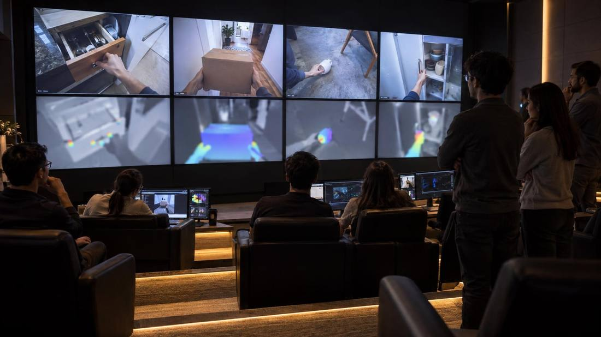
Embo Raises $110M Seed Led by a16z to Build a World-Model Brain for RobotsEmbo announced on November 23, 2026, that it has raised a $110 million seed round led by Andreessen Horowitz to build AI models for intelligent robots, with NVIDIA among the backers. Founded by former Google DeepMind research scientists Danijar Hafner and Wilson Yan, the company is building a unified world model trained on internet video and robot demonstrations, so robots can learn general knowledge and practice motor skills in imagination before acting in the real world.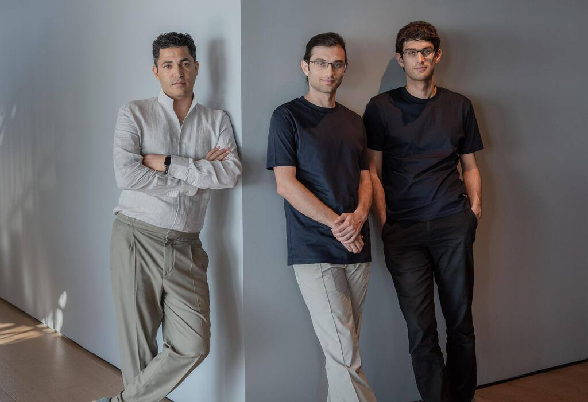
Amazon Signs $7.5B Deal for Decart's AI Optimization Technology and TeamAmazon announced on November 23, 2026 that it has signed an agreement to purchase the proprietary technology behind the Decart Optimization Stack (DOS) and bring Decart's three co-founders and their team of AI researchers and engineers to Amazon. Calcalist reported the transaction is valued at $7.5 billion; Amazon did not disclose a price. The deal is aimed at improving AI inference and custom-silicon performance, centred on Amazon's Trainium chips. Applied Digital Signs $5.4B, 150 MW Hyperscaler Lease as Contracted Revenue Passes $41BApplied Digital announced on November 23, 2026, that it has signed an 18-year lease with a tier-one investment-grade hyperscaler for 150 MW of critical IT capacity, worth about $5.4 billion in base-term contracted revenue, or about $12.7 billion if all renewal options are exercised over a 33-year term. Total contracted base-term lease revenue now exceeds $41 billion, about $100 billion with renewals, and about 75 percent of it is tied to investment-grade customers. Delivery is expected to begin in the first half of 2028.
Applied Digital Signs $5.4B, 150 MW Hyperscaler Lease as Contracted Revenue Passes $41BApplied Digital announced on November 23, 2026, that it has signed an 18-year lease with a tier-one investment-grade hyperscaler for 150 MW of critical IT capacity, worth about $5.4 billion in base-term contracted revenue, or about $12.7 billion if all renewal options are exercised over a 33-year term. Total contracted base-term lease revenue now exceeds $41 billion, about $100 billion with renewals, and about 75 percent of it is tied to investment-grade customers. Delivery is expected to begin in the first half of 2028. Sierra Raises $1.75B Series F at $30B Valuation as Enterprise Agents Hit $400M ARRSierra announced on November 23, 2026, that it is raising $1.75 billion in a Series F round at a $30 billion valuation, led by Greenoaks and Lightspeed Venture Partners, with all previous lead investors participating again. The valuation is nearly double the above-$15 billion set in its May 2026 raise. Annual recurring revenue passed $400 million, with more than $150 million added in the third quarter, and the company says it works with almost 50 percent of the Fortune 50.
Sierra Raises $1.75B Series F at $30B Valuation as Enterprise Agents Hit $400M ARRSierra announced on November 23, 2026, that it is raising $1.75 billion in a Series F round at a $30 billion valuation, led by Greenoaks and Lightspeed Venture Partners, with all previous lead investors participating again. The valuation is nearly double the above-$15 billion set in its May 2026 raise. Annual recurring revenue passed $400 million, with more than $150 million added in the third quarter, and the company says it works with almost 50 percent of the Fortune 50. CrowdStrike to Buy Zscaler in $43.9B All-Stock Deal to Build AI-Era Security PlatformCrowdStrike will acquire Zscaler in an all-stock deal valued at approximately $43.9 billion, announced November 23, 2026, uniting endpoint security with zero-trust network security on a single platform pitched as the operating system for AI-era security. Zscaler shareholders receive 1.135 CrowdStrike shares per share, a 34% premium; the combined company starts with more than $10 billion in annual recurring revenue and is expected to close in the second half of CrowdStrike's fiscal 2028.
CrowdStrike to Buy Zscaler in $43.9B All-Stock Deal to Build AI-Era Security PlatformCrowdStrike will acquire Zscaler in an all-stock deal valued at approximately $43.9 billion, announced November 23, 2026, uniting endpoint security with zero-trust network security on a single platform pitched as the operating system for AI-era security. Zscaler shareholders receive 1.135 CrowdStrike shares per share, a 34% premium; the combined company starts with more than $10 billion in annual recurring revenue and is expected to close in the second half of CrowdStrike's fiscal 2028. Agon Raises $70M to Build Europe's Defence AI Lab for Autonomous SystemsLondon-based defence AI startup Agon has raised $70 million in a Series A round at a $450 million valuation, led by Northzone, with the UK Sovereign AI Fund and the National Security Strategic Investment Fund investing together for the first time. Founded in January 2026 by former Anduril executive Tristam Constant, Agon builds a synthetic battle arena where autonomous defence systems are trained and tested in simulation before deployment.
Agon Raises $70M to Build Europe's Defence AI Lab for Autonomous SystemsLondon-based defence AI startup Agon has raised $70 million in a Series A round at a $450 million valuation, led by Northzone, with the UK Sovereign AI Fund and the National Security Strategic Investment Fund investing together for the first time. Founded in January 2026 by former Anduril executive Tristam Constant, Agon builds a synthetic battle arena where autonomous defence systems are trained and tested in simulation before deployment. Ant Group Leads a $100M Round in Humanoid Startup Simplexity at a $1.6B ValuationChinese physical AI startup Simplexity Robotics has raised $100 million in a pre-Series A round led by Ant Group, valuing the 16-month-old company at $1.6 billion, chairman and co-founder Wang Kai told Bloomberg. Existing investors Tencent, HSG and Lanchi Ventures joined the round. The same day, Simplexity unveiled iX, a wheeled humanoid built for service tasks.
Ant Group Leads a $100M Round in Humanoid Startup Simplexity at a $1.6B ValuationChinese physical AI startup Simplexity Robotics has raised $100 million in a pre-Series A round led by Ant Group, valuing the 16-month-old company at $1.6 billion, chairman and co-founder Wang Kai told Bloomberg. Existing investors Tencent, HSG and Lanchi Ventures joined the round. The same day, Simplexity unveiled iX, a wheeled humanoid built for service tasks.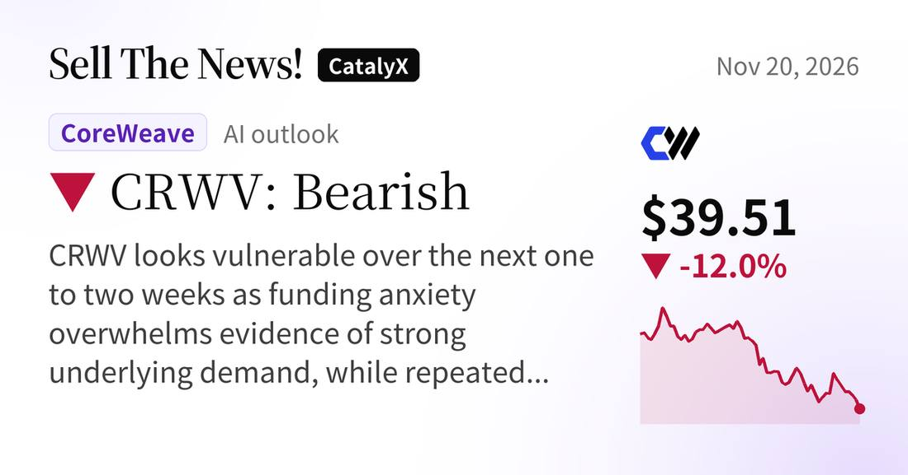
CoreWeave Slips Below Its $40 IPO Price as Debt Worries ReturnCoreWeave shares closed below their $40 IPO price for the first time on Friday, November 20, 2026, falling 12.02% to $39.51, a 52-week low, after a morning low of $39.96, BeInCrypto reported. The AI cloud company grew third-quarter revenue 168% to a record $3.66 billion, but its debt of roughly $47 billion and net interest expense of $846 million, about 23% of revenue, drove the selloff. Contracted backlog reached $132.5 billion and the 2026 sales forecast was raised to $13 billion to $13.3 billion; the company expects about $9 billion in customer prepayments within three months instead of unsecured borrowing at yields near 15%.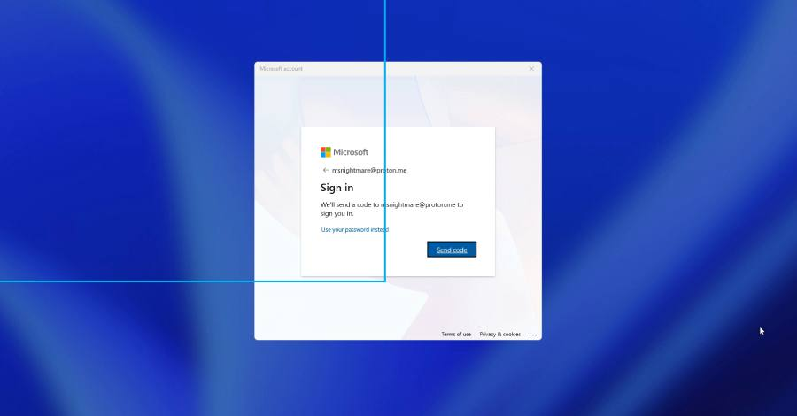
Unpatched Windows 0-Day 'FastUnlock' Bypasses the Lock Screen on BitLocker PCsAn unpatched Windows zero-day called FastUnlock, disclosed on GitHub on November 19, 2026, lets someone with physical access to a locked computer run programs without signing in, The Hacker News reported on November 20, 2026. The technique uses the built-in Narrator screen reader from the lock screen's account-recovery prompt to reach system settings and open a USB drive's contents. ThreatLocker reproduced it the same day, gaining code execution in the limited WSIAccount. It requires a Microsoft account linked on the machine, does not break BitLocker encryption, and has no fix, CVE, or advisory from Microsoft as of November 20, 2026. Cognition in Talks for New Funding at a $75 Billion ValuationCognition AI, the maker of the Devin coding agent, is in talks for a new funding round at a $75 billion valuation, Bloomberg News reported on Friday, November 20, 2026. The company is considering raising $2 billion or more, with talks ongoing and terms still subject to change. The valuation would be about 56% above the $48 billion at which Cognition raised $2 billion in a Series E about two months earlier, and sits inside the $70 billion to $80 billion range of investor offers Business Insider reported in late October.
Cognition in Talks for New Funding at a $75 Billion ValuationCognition AI, the maker of the Devin coding agent, is in talks for a new funding round at a $75 billion valuation, Bloomberg News reported on Friday, November 20, 2026. The company is considering raising $2 billion or more, with talks ongoing and terms still subject to change. The valuation would be about 56% above the $48 billion at which Cognition raised $2 billion in a Series E about two months earlier, and sits inside the $70 billion to $80 billion range of investor offers Business Insider reported in late October.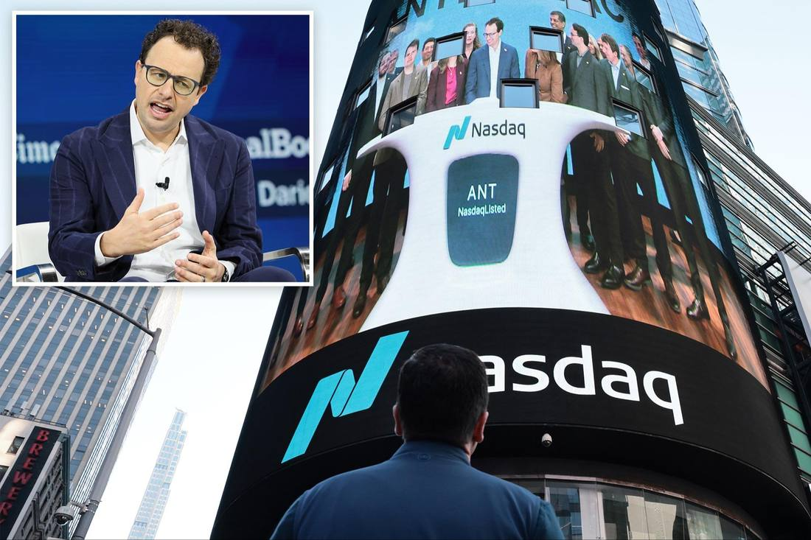
Anthropic Closes the Record IPO at $93.5 Billion as the Stock Slides Toward Its Issue PriceAnthropic closed its IPO on Friday, November 20, 2026, after Morgan Stanley exercised the full 147-million-share greenshoe at the $83 offer price, lifting gross proceeds to roughly $93.5 billion, the largest IPO on record. A $26 billion private placement to strategic investors closed alongside. The shares fell 8.5% the same day to $88.91, after touching $83.05 intraday, and the stabilization support is now gone. This flash closes the Anthropic IPO arc in flashes 440, 441, 443, 447 and 451. Anthropic Closes Friday at $88.91, Down 8.5% on Day Two but Still Above $83 IPO PriceAnthropic shares closed their second Nasdaq session at $88.91 on Friday, November 20, 2026, down $8.26, or 8.5%, from Thursday's $97.17 close, after opening at $89.86 and dipping to $83.05, five cents above the $83 IPO price. The close is still 7.1% above the offer price. The slide came on a brutal day for the AI trade: the Nasdaq fell 5.3%, wiping out its 2026 gains, the S&P 500 dropped 3.6% for a seventh straight down day, and the VIX jumped to 33. The offering closed with the greenshoe exercised in full, about $93.5 billion. This flash updates flashes 434 and 440.
Anthropic Closes Friday at $88.91, Down 8.5% on Day Two but Still Above $83 IPO PriceAnthropic shares closed their second Nasdaq session at $88.91 on Friday, November 20, 2026, down $8.26, or 8.5%, from Thursday's $97.17 close, after opening at $89.86 and dipping to $83.05, five cents above the $83 IPO price. The close is still 7.1% above the offer price. The slide came on a brutal day for the AI trade: the Nasdaq fell 5.3%, wiping out its 2026 gains, the S&P 500 dropped 3.6% for a seventh straight down day, and the VIX jumped to 33. The offering closed with the greenshoe exercised in full, about $93.5 billion. This flash updates flashes 434 and 440. DeepSeek Closes About 100 Billion Yuan Round as STAR Market IPO NearsChinese AI developer DeepSeek has completed a second external funding round of about 100 billion yuan ($15 billion) as it prepares to pursue an initial public offering on Shanghai's STAR Market, Caixin Global reported on November 20, 2026. Business registration changes completed on November 17 show that a partnership representing the round's new investors took a roughly 17.3% stake. The Information put the total at $15.8 billion and the valuation at about 615.5 billion yuan, which it described as China's largest AI venture raise to date.
DeepSeek Closes About 100 Billion Yuan Round as STAR Market IPO NearsChinese AI developer DeepSeek has completed a second external funding round of about 100 billion yuan ($15 billion) as it prepares to pursue an initial public offering on Shanghai's STAR Market, Caixin Global reported on November 20, 2026. Business registration changes completed on November 17 show that a partnership representing the round's new investors took a roughly 17.3% stake. The Information put the total at $15.8 billion and the valuation at about 615.5 billion yuan, which it described as China's largest AI venture raise to date. Anthropic Slides Toward Its IPO Price on Day Two as the AI Trade Keeps FallingAnthropic shares slid about 10% in premarket trading on Friday, November 20, 2026, falling toward the $83 IPO price a day after the largest IPO on record closed up 17% at $97.17. Reuters put the early premarket decline at 6% to $91.24; later snapshots from MarketWatch and Barron's showed the slide deepening to roughly $85 to $87.
Anthropic Slides Toward Its IPO Price on Day Two as the AI Trade Keeps FallingAnthropic shares slid about 10% in premarket trading on Friday, November 20, 2026, falling toward the $83 IPO price a day after the largest IPO on record closed up 17% at $97.17. Reuters put the early premarket decline at 6% to $91.24; later snapshots from MarketWatch and Barron's showed the slide deepening to roughly $85 to $87. Anthropic Greenshoe Exercised in Full, IPO Closes at $93.5 BillionAnthropic said on Friday, November 20, 2026, that its underwriters had exercised the greenshoe option in full, lifting the total proceeds from its initial public offering to roughly $93.5 billion and closing the offering. The option covered 147 million additional Class A shares at the $83 offer price, worth about $12.2 billion, on top of the $81.34 billion priced on November 18. With the separate $26 billion private placement, the full package is about $119.5 billion before fees. This flash updates flash 434, which covered the first-day close at $97.17.
Anthropic Greenshoe Exercised in Full, IPO Closes at $93.5 BillionAnthropic said on Friday, November 20, 2026, that its underwriters had exercised the greenshoe option in full, lifting the total proceeds from its initial public offering to roughly $93.5 billion and closing the offering. The option covered 147 million additional Class A shares at the $83 offer price, worth about $12.2 billion, on top of the $81.34 billion priced on November 18. With the separate $26 billion private placement, the full package is about $119.5 billion before fees. This flash updates flash 434, which covered the first-day close at $97.17. SoftBank Plunges 16% as Anthropic's Record IPO Fails to Stop the AI Sell-OffSoftBank Group shares plunged about 16% on Friday, November 20, 2026, leading a sell-off across Asian technology stocks one day after Anthropic's record $81 billion IPO debut. Japan's Nikkei and South Korea's Kospi each fell 4.7%, with SK Hynix, Samsung, Kioxia and Advantest all down sharply, and the US technology ETF entered bear-market territory after the Nasdaq fell more than 2% overnight. Anthropic itself closed its first day up 17% at $97.17, but Commerzbank said the listing triggered rotation out of existing AI names rather than lifting them.
SoftBank Plunges 16% as Anthropic's Record IPO Fails to Stop the AI Sell-OffSoftBank Group shares plunged about 16% on Friday, November 20, 2026, leading a sell-off across Asian technology stocks one day after Anthropic's record $81 billion IPO debut. Japan's Nikkei and South Korea's Kospi each fell 4.7%, with SK Hynix, Samsung, Kioxia and Advantest all down sharply, and the US technology ETF entered bear-market territory after the Nasdaq fell more than 2% overnight. Anthropic itself closed its first day up 17% at $97.17, but Commerzbank said the listing triggered rotation out of existing AI names rather than lifting them. Anthropic Closes First Day at $97.17, Up 17%, After Fading From $111.50 OpenAnthropic shares closed their first Nasdaq session at $97.17 on November 19, 2026, up 17.1% from the $83 IPO price, after opening at $111.50 and touching $115.10 in early trading. The close sits about 13% below the open, on a day the Nasdaq fell 1.5% and the S&P 500 fell 1.4%. The $81.34 billion offering is the largest IPO on record, and Anthropic is the first standalone AI lab to trade publicly. This flash updates flash 433, which covered the debut open.
Anthropic Closes First Day at $97.17, Up 17%, After Fading From $111.50 OpenAnthropic shares closed their first Nasdaq session at $97.17 on November 19, 2026, up 17.1% from the $83 IPO price, after opening at $111.50 and touching $115.10 in early trading. The close sits about 13% below the open, on a day the Nasdaq fell 1.5% and the S&P 500 fell 1.4%. The $81.34 billion offering is the largest IPO on record, and Anthropic is the first standalone AI lab to trade publicly. This flash updates flash 433, which covered the debut open.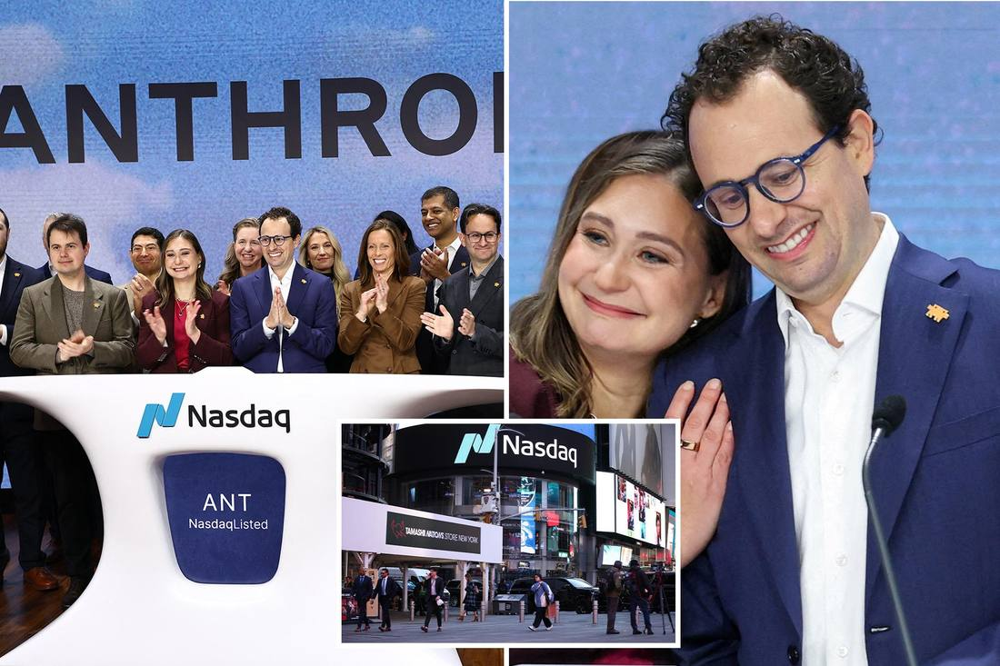
Anthropic Opens at $111.50, Up 34%, in Record IPO DebutAnthropic shares opened at $111.50 on the Nasdaq on November 19, 2026, up 34% from the $83 IPO price, valuing the Claude maker at about $2 trillion on a fully diluted basis. The first trade printed around 11:50 a.m. ET after the opening auction, and shares rose as high as $114.99 in early trading. The $81.34 billion offering is the largest IPO on record, and Anthropic is the first standalone AI lab to trade publicly. This flash updates flashes 421 and 425, which covered the $83 pricing and the 980-million-share confirmation.PDD Revenue Stalls as Temu Fees Fall 12% in First Full EU-Duty QuarterPDD Holdings reported third-quarter 2026 revenue of RMB108,341 million on November 19, 2026, essentially flat year over year and about RMB7.7 billion below the LSEG analyst average of RMB115.97 billion, a fifth consecutive quarterly revenue miss. Transaction services revenue fell 12% to RMB48,522 million in the first full quarter under the EU duty on low-value parcels, while online marketing services revenue rose 12% to RMB59,819 million. Operating profit rose 25% to RMB31,164 million on a 17% cut in sales and marketing spending; non-GAAP diluted earnings per ADS of US$3.14 beat the $2.77 consensus. Shares rose about 9% in pre-market trading. Alibaba Beats on Revenue as AI Cloud Revenue Jumps 53%Alibaba beat September-quarter revenue estimates on November 19, 2026, reporting RMB271,519 million, up 10% year over year, against an LSEG average of RMB269,810 million. AI Cloud and Compute Services revenue jumped 53% to RMB60,973 million, with external customer revenue up 64% and AI-related product revenue growing at triple-digit rates for a thirteenth consecutive quarter. Net income rose 213% to RMB64,420 million, mostly on net investment income; non-GAAP net income rose 92%. T-Head's Zhenwu V900 AI chip is due for commercial release in the first quarter of 2027.Anthropic Confirms $83 IPO at 980 Million Shares, the Largest on RecordAnthropic confirmed its initial public offering on the evening of November 18, 2026, pricing 980 million Class A shares at $83.00 each, a $81.34 billion gross value that makes it the largest IPO on record by proceeds at pricing, passing SpaceX's $75 billion June debut. The offering is 155 million shares larger than the 825 million in the prospectus, a gap Flash 421 could not fill because the final count had not been disclosed. Shares begin trading Thursday, November 19, on the Nasdaq under the ticker ANT.
Alibaba Beats on Revenue as AI Cloud Revenue Jumps 53%Alibaba beat September-quarter revenue estimates on November 19, 2026, reporting RMB271,519 million, up 10% year over year, against an LSEG average of RMB269,810 million. AI Cloud and Compute Services revenue jumped 53% to RMB60,973 million, with external customer revenue up 64% and AI-related product revenue growing at triple-digit rates for a thirteenth consecutive quarter. Net income rose 213% to RMB64,420 million, mostly on net investment income; non-GAAP net income rose 92%. T-Head's Zhenwu V900 AI chip is due for commercial release in the first quarter of 2027.Anthropic Confirms $83 IPO at 980 Million Shares, the Largest on RecordAnthropic confirmed its initial public offering on the evening of November 18, 2026, pricing 980 million Class A shares at $83.00 each, a $81.34 billion gross value that makes it the largest IPO on record by proceeds at pricing, passing SpaceX's $75 billion June debut. The offering is 155 million shares larger than the 825 million in the prospectus, a gap Flash 421 could not fill because the final count had not been disclosed. Shares begin trading Thursday, November 19, on the Nasdaq under the ticker ANT.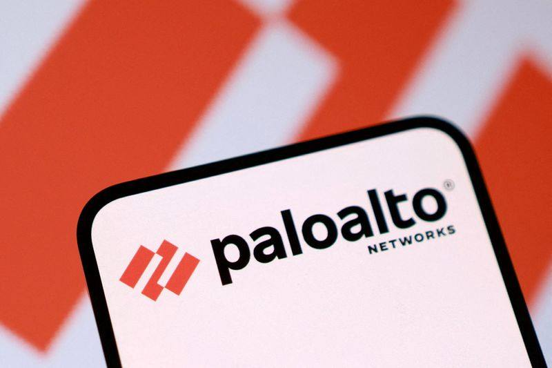
Palo Alto Networks Buys Applied Compute for $4.5B in Stock, Lifts Full-Year ForecastPalo Alto Networks announced on November 18, 2026 a definitive agreement to acquire Applied Compute, a platform for post-training and inference of open-weight AI models, in an all-stock deal valued at $4.5 billion, expected to close in fiscal third-quarter 2027. Applied Compute reported a $100 million annualized revenue run rate and raised $350 million at a $3.25 billion valuation on November 2. Palo Alto also reported fiscal first-quarter revenue of $3.45 billion, up 39% year over year, and raised full-year guidance to $14.52 to $14.57 billion.Anthropic Prices Its IPO at $83, Above Range, Ahead of Thursday DebutAnthropic priced its initial public offering at $83 a share on November 18, 2026, above its $70 to $78 target range, Reuters reported, with the offering size increased beyond the 825 million shares in the filing. At $83, the original share count alone raises about $68.5 billion, and a $26 billion concurrent private placement lifts the combined total to at least $94.5 billion. Shares begin trading Thursday, November 19, on the Nasdaq under the ticker ANT. Kress Raises Nvidia's Fiscal 2028 Growth Outlook to 75% as CPU Revenue Set to More Than DoubleInterim chief executive Colette Kress raised Nvidia's fiscal 2028 revenue growth outlook to approximately 75 percent year over year, up from 70 percent, on the November 17, 2026 earnings call, and said total CPU revenue will more than double in fiscal 2028 as agentic AI drives extraordinary demand for CPUs. The raise came hours after Nvidia reported $115.8 billion in third-quarter revenue and a $130 billion fourth-quarter guide, and while the Wall Street Journal reported a Securities and Exchange Commission investigation into the company.
Kress Raises Nvidia's Fiscal 2028 Growth Outlook to 75% as CPU Revenue Set to More Than DoubleInterim chief executive Colette Kress raised Nvidia's fiscal 2028 revenue growth outlook to approximately 75 percent year over year, up from 70 percent, on the November 17, 2026 earnings call, and said total CPU revenue will more than double in fiscal 2028 as agentic AI drives extraordinary demand for CPUs. The raise came hours after Nvidia reported $115.8 billion in third-quarter revenue and a $130 billion fourth-quarter guide, and while the Wall Street Journal reported a Securities and Exchange Commission investigation into the company.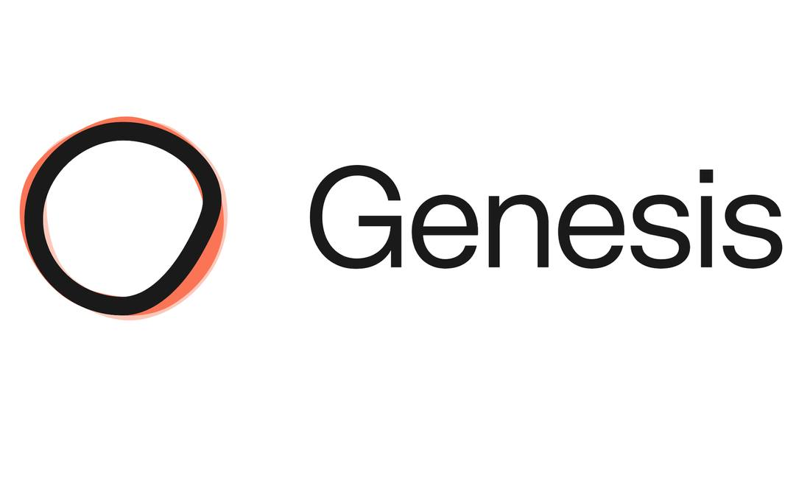
Genesis AI Raises $500M at a $3.5B Valuation to Put General-Purpose Robots to WorkGenesis AI, a Paris and San Carlos robotics company building general-purpose robots, raised $500 million in Series A funding at a $3.5 billion post-money valuation on November 17, 2026, co-led by Premji Invest, Khosla Ventures and Eclipse, with NVIDIA, AMD Ventures and former Google chief executive Eric Schmidt among the participants. The company builds its full stack in-house, GENE, a dexterous hand and data glove, Genesis World simulation and its flagship robot Eno, and will use the money to deploy Eno at scale in manufacturing, logistics and laboratories. Nvidia Beats Big in Its First Jensen-Free Quarter: $115.8B Revenue, $130B GuideNvidia reported third-quarter fiscal 2027 revenue of $115.84 billion, up 103 percent year over year, beating the $108.71 billion consensus by about $7.1 billion, with non-GAAP earnings of $2.68 per share against $2.47 expected and Data Center revenue of $107.6 billion, up 110 percent. The company guided fourth-quarter revenue to $130.0 billion, plus or minus 3 percent, above consensus, and said Vera Rubin NVL72 has shipped. It is the first print since Jensen Huang resigned on November 12, with interim chief executive Colette Kress leading the call.
Nvidia Beats Big in Its First Jensen-Free Quarter: $115.8B Revenue, $130B GuideNvidia reported third-quarter fiscal 2027 revenue of $115.84 billion, up 103 percent year over year, beating the $108.71 billion consensus by about $7.1 billion, with non-GAAP earnings of $2.68 per share against $2.47 expected and Data Center revenue of $107.6 billion, up 110 percent. The company guided fourth-quarter revenue to $130.0 billion, plus or minus 3 percent, above consensus, and said Vera Rubin NVL72 has shipped. It is the first print since Jensen Huang resigned on November 12, with interim chief executive Colette Kress leading the call. Anthropic's Final Filing Before Pricing: Amazon and Google to Own 28.4%Anthropic filed Amendment No. 3 to its S-1 on November 17, 2026, the final filing before pricing expected November 18. Amazon will own 14.7% and Google 13.7% of Anthropic's outstanding capital stock after the IPO and a concurrent $26 billion private placement, a combined 28.4%. The placement is led by Google and Nvidia at $10 billion each. The $70 to $78 range for 825 million shares is unchanged, Nasdaq has approved the ANT listing, and net proceeds are estimated at $84.6 billion at the $74 midpoint.
Anthropic's Final Filing Before Pricing: Amazon and Google to Own 28.4%Anthropic filed Amendment No. 3 to its S-1 on November 17, 2026, the final filing before pricing expected November 18. Amazon will own 14.7% and Google 13.7% of Anthropic's outstanding capital stock after the IPO and a concurrent $26 billion private placement, a combined 28.4%. The placement is led by Google and Nvidia at $10 billion each. The $70 to $78 range for 825 million shares is unchanged, Nasdaq has approved the ANT listing, and net proceeds are estimated at $84.6 billion at the $74 midpoint. Model ML Raises $250M at a $1.5B Valuation to Put AI Agents Inside BanksModel ML, a London startup building personal AI agents for bankers, consultants and investors, raised $250 million in Series B funding at a $1.5 billion valuation on November 17, 2026, co-led by General Atlantic and QED Investors. Total funding now stands at $350 million. In the third quarter of 2026, annual recurring revenue grew 12 times year on year and daily active users rose 26 times, and the company claims its own fine-tuned open-source models do the same financial work at 2 percent of frontier cost.
Model ML Raises $250M at a $1.5B Valuation to Put AI Agents Inside BanksModel ML, a London startup building personal AI agents for bankers, consultants and investors, raised $250 million in Series B funding at a $1.5 billion valuation on November 17, 2026, co-led by General Atlantic and QED Investors. Total funding now stands at $350 million. In the third quarter of 2026, annual recurring revenue grew 12 times year on year and daily active users rose 26 times, and the company claims its own fine-tuned open-source models do the same financial work at 2 percent of frontier cost.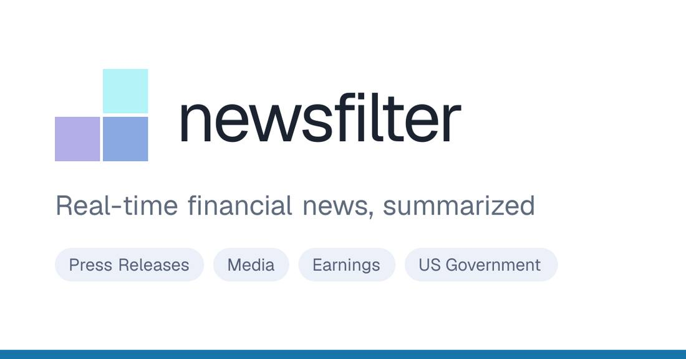
JD.com Swings to Profit as Q3 Revenue Hits RMB309.6 BillionJD.com reported Q3 2026 net revenue of RMB309.6 billion (US$46.2 billion), up 3.5% year over year, and swung to operating income of RMB5.2 billion from a RMB1.1 billion loss a year earlier, as food-delivery losses narrowed and its retail arm held a 5.8% operating margin. Non-GAAP net income reached RMB8.3 billion, with diluted non-GAAP earnings per ADS of US$0.88, in line with Wall Street expectations.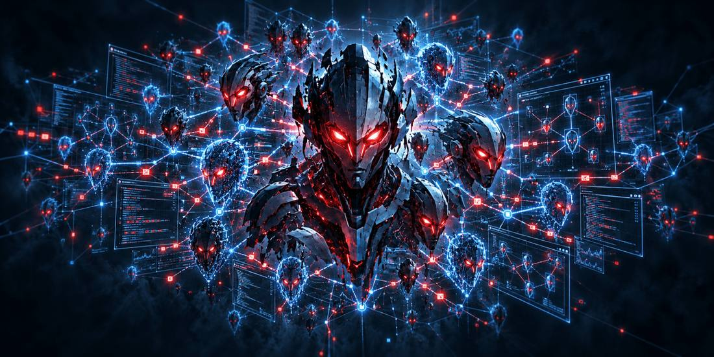
Corma Hits $1B Valuation Three Months After Launching Its Defense AIAI cybersecurity startup Corma raised a $125 million Series A at a $1 billion valuation led by NEA, about three months after emerging from stealth in August with a $60 million seed round. Total funding now stands at $185 million, and the company says demand from large enterprises surged after October's disclosure wave, with server capacity up 24-fold since August.Altimeter Plans $5 Billion Anthropic IPO Order, Five Times Its Largest EverAltimeter Capital plans to invest $5 billion in Anthropic's IPO, founder Brad Gerstner told CNBC's Halftime Report on November 16, 2026, five times the fund's largest IPO commitment ever and about 8% of the 825 million shares on offer at the $74 midpoint. Anthropic is due to price at $70 to $78 a share on November 18 for a valuation of about $1.4 trillion, with trading to begin November 19 on the Nasdaq under ANT.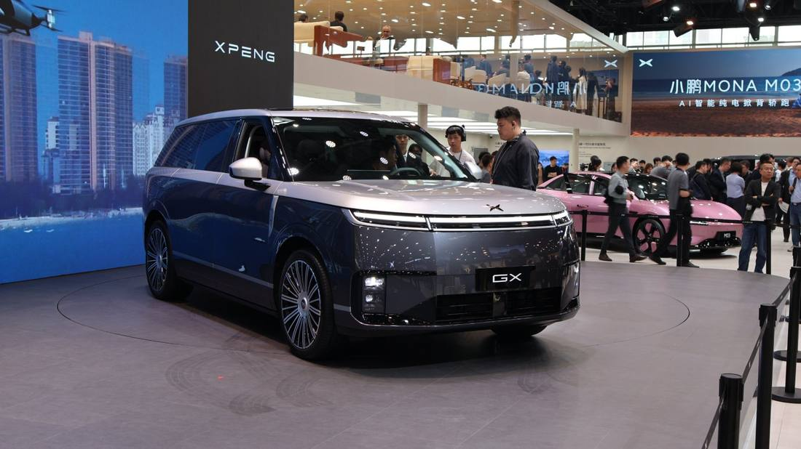
XPeng Q3: Record Revenue Beats Guidance as Q4 Deliveries Target 169,000+XPeng reported record third-quarter 2026 revenue of RMB24.28 billion, up 19.1% year over year and above the top end of its guidance, as deliveries hit a quarterly record of 118,390 vehicles. The net loss narrowed to RMB0.87 billion, and the company guided fourth-quarter deliveries of 169,000 to 174,000 vehicles, up at least 45% year over year.Baidu Q3: AI Cloud Revenue Jumps 94% as Search Ads Slide 22%Baidu reported Q3 2026 revenue of RMB30.8 billion, down 1% year over year and in line with estimates, as AI cloud infrastructure revenue surged 94% to RMB8.2 billion while online marketing revenue fell 22% to RMB11.9 billion. AI-powered business reached 53% of general business revenue for a third straight quarter. Lutnick Pushed Narrower AI Chip Rules as Family Firm Worked With Affected Data Centers, NYT FindsCommerce Secretary Howard Lutnick has pushed for narrower US controls on overseas access to advanced AI chips, a New York Times investigation published November 15 found, while his family's firm Cantor Fitzgerald did business with data-center companies that could be affected. The Times found no evidence the firm's dealings influenced his decisions; the proposed rule would cover seven countries and future shipments only.
Lutnick Pushed Narrower AI Chip Rules as Family Firm Worked With Affected Data Centers, NYT FindsCommerce Secretary Howard Lutnick has pushed for narrower US controls on overseas access to advanced AI chips, a New York Times investigation published November 15 found, while his family's firm Cantor Fitzgerald did business with data-center companies that could be affected. The Times found no evidence the firm's dealings influenced his decisions; the proposed rule would cover seven countries and future shipments only. Seedance 2.5 Flash API Goes Live, ByteDance's Faster Video Model at a Third LessByteDance's Seedance 2.5 Flash API opened November 15: the faster, cheaper video model is now live for developers on Volcano Engine's Ark platform, with BytePlus's international ModelArk opening the same day. At $0.152 per second of 720p video, about 34 percent below the flagship Seedance 2.5, it caps out at 720p and 30-second clips.
Seedance 2.5 Flash API Goes Live, ByteDance's Faster Video Model at a Third LessByteDance's Seedance 2.5 Flash API opened November 15: the faster, cheaper video model is now live for developers on Volcano Engine's Ark platform, with BytePlus's international ModelArk opening the same day. At $0.152 per second of 720p video, about 34 percent below the flagship Seedance 2.5, it caps out at 720p and 30-second clips. FAA Shutdown Traced to Routers in Arkansas and Texas as L3Harris RespondsUpdate to flashes 358, 359 and 365: government officials told Reuters on Saturday, November 14, 2026, that the nationwide aviation shutdown may have been the fault of a single router installed by government contractor L3Harris, and that there may have been problems with routers installed in both Arkansas and Texas. The overload hit communications at 17 of the FAA's 22 en route centers, and the FAA ordered the ground stop because it could not identify a root cause. The routers being replaced are about 25 years old and were supposed to have been replaced in 2006, while the FAA spends $1 billion a year maintaining its copper wire system. L3Harris has now responded, saying it supports the FAA investigation and has completed more than 70% of the copper-to-fiber conversion. More than 20,000 flights have been disrupted since Friday. The exact cause has not been determined and no formal root-cause finding has been published.
FAA Shutdown Traced to Routers in Arkansas and Texas as L3Harris RespondsUpdate to flashes 358, 359 and 365: government officials told Reuters on Saturday, November 14, 2026, that the nationwide aviation shutdown may have been the fault of a single router installed by government contractor L3Harris, and that there may have been problems with routers installed in both Arkansas and Texas. The overload hit communications at 17 of the FAA's 22 en route centers, and the FAA ordered the ground stop because it could not identify a root cause. The routers being replaced are about 25 years old and were supposed to have been replaced in 2006, while the FAA spends $1 billion a year maintaining its copper wire system. L3Harris has now responded, saying it supports the FAA investigation and has completed more than 70% of the copper-to-fiber conversion. More than 20,000 flights have been disrupted since Friday. The exact cause has not been determined and no formal root-cause finding has been published. FAA Saturday Briefing Points to Faulty Router in L3Harris Maintenance WorkUpdate to flashes 358 and 359: Transportation Secretary Sean Duffy said at a U.S. Department of Transportation press conference on Saturday, November 14, 2026, that a faulty router might have caused the communications outage that forced the Federal Aviation Administration to halt all departing flights nationwide on Friday. The outage occurred during routine FAA telecommunications maintenance at a remote facility, where aging copper communications lines were being replaced with fiber-optic service by contractor L3Harris. During the upgrade, a router began flooding the FAA network with traffic, generating more than 1,000 connection attempts every four to five seconds. Investigators have not yet determined the exact cause of the router failure, including whether it stemmed from human error, an installation mistake, or a problem with the equipment itself. Officials do not believe the outage was caused by a cyberattack or other malicious activity. The stop lasted more than four hours, was lifted at 8:15 p.m. Eastern on Friday, and was only the second nationwide halt since the September 11, 2001, attacks. FlightAware counted more than 9,100 flights canceled and more than 24,500 delayed on Friday, and 3,568 cancellations by 8:17 a.m. Eastern on Saturday.
FAA Saturday Briefing Points to Faulty Router in L3Harris Maintenance WorkUpdate to flashes 358 and 359: Transportation Secretary Sean Duffy said at a U.S. Department of Transportation press conference on Saturday, November 14, 2026, that a faulty router might have caused the communications outage that forced the Federal Aviation Administration to halt all departing flights nationwide on Friday. The outage occurred during routine FAA telecommunications maintenance at a remote facility, where aging copper communications lines were being replaced with fiber-optic service by contractor L3Harris. During the upgrade, a router began flooding the FAA network with traffic, generating more than 1,000 connection attempts every four to five seconds. Investigators have not yet determined the exact cause of the router failure, including whether it stemmed from human error, an installation mistake, or a problem with the equipment itself. Officials do not believe the outage was caused by a cyberattack or other malicious activity. The stop lasted more than four hours, was lifted at 8:15 p.m. Eastern on Friday, and was only the second nationwide halt since the September 11, 2001, attacks. FlightAware counted more than 9,100 flights canceled and more than 24,500 delayed on Friday, and 3,568 cancellations by 8:17 a.m. Eastern on Saturday.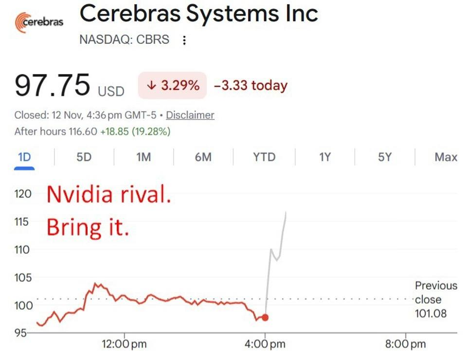
Cerebras Beats Q3 Estimates and Raises 2026 Forecast on AI DemandCerebras reported third-quarter adjusted sales of $230.9 million, up 70% year over year and beating the $214.70 million analyst consensus. Core cloud and services revenue, reflecting the OpenAI deal, more than tripled to $144.9 million. Cerebras raised its 2026 adjusted revenue forecast to $940 million to $960 million, up from $880 million to $890 million. Shares rose 11% in extended trading. GAAP revenue of $210.8 million missed consensus on that measure; the beat was on adjusted core revenue. Cerebras guided fourth-quarter core revenue to $310 million to $330 million and reiterated that revenue should triple in 2027.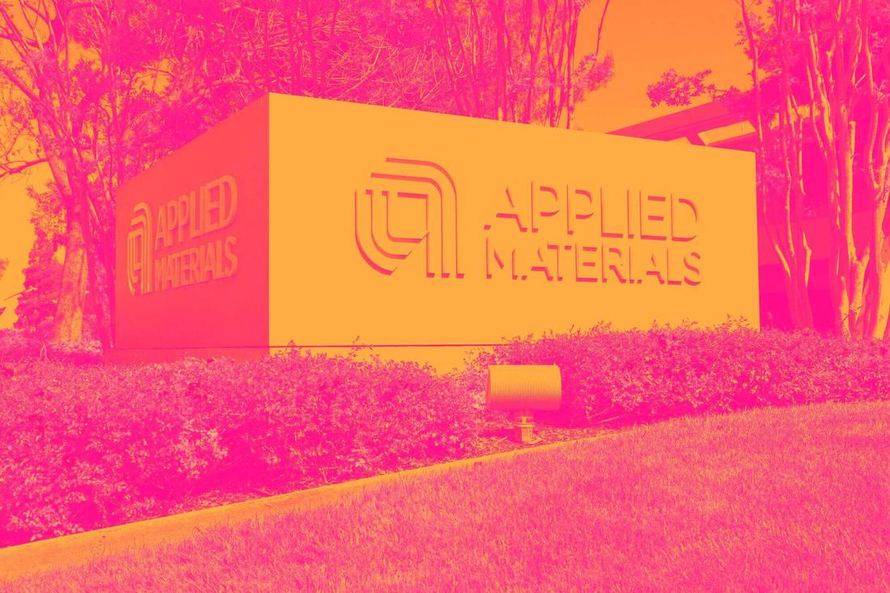
Applied Materials Posts Record $10.41 Billion Quarter, Guides HigherApplied Materials reported record fourth-quarter fiscal 2026 revenue of $10.41 billion, up 53% year over year, with record non-GAAP earnings per share of $4.16, up 92%, beating Wall Street expectations. Full-year revenue reached a record $34.45 billion. Applied guided first-quarter fiscal 2027 revenue to $11.1 billion and non-GAAP earnings per share to $4.35, both above consensus, and unveiled the EPIC Center with four new research partnerships.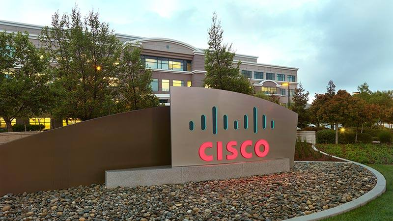
Cisco Posts Record $18.5 Billion Quarter as AI Networking Demand AcceleratesCisco reported record first-quarter fiscal 2027 revenue of $18.5 billion, up 24% year over year, with non-GAAP earnings per share of $1.40, up 40%, beating its guidance and Wall Street expectations. Cisco raised full-year fiscal 2027 guidance to $74.8 billion to $75.8 billion in revenue and $5.47 to $5.53 in non-GAAP earnings per share, and lifted its hyperscaler AI infrastructure revenue expectation to $9 billion. Shares rose about 2.4% in after-hours trading. Nebius Blames Third-Party Capacity Delay as Shares Slide 12% After Earnings CallNebius shares deepened their slide to 12% in premarket trading after the earnings call, as the company said third-party capacity expected online this year will now arrive in the first half of 2027, pushing some December revenue into February. The contracts behind the delayed capacity remain in place, and the company still expects to add more than 1 gigawatt of new capacity a year.Nebius Plans $40-45 Billion of 2027 Capex as Revenue Slips, Shares ReverseNebius Group plans $40-45 billion of capital expenditures in 2027, far above the $28.77 billion FactSet consensus, and raised its 2026 spending plan to $27 billion, hours after reporting third-quarter revenue of $980.8 million, up 571% year on year. Full-year 2026 revenue is now expected at the low end of the $3-3.4 billion range, with some December revenue slipping to February. Shares reversed an early premarket gain and fell 8.3% to $141.90, according to Barron's.MARKETS & INDUSTRYNebius Q3 Revenue Jumps 571% to $981 Million, Beats Estimates, Projects $12-13 Billion in 2027 SalesNebius Group reported third-quarter 2026 revenue of $980.8 million, up 571% year on year and ahead of the $907.5 million LSEG consensus estimate, with adjusted EBITDA of $465.8 million and adjusted net income of $90.9 million. The company projected $12-13 billion in sales for 2027 and targets pre-tax breakeven by the end of 2027, while leaving its 2026 revenue range at $3-3.4 billion. Customer prepayments covered more than 100% of the capital spending tied to those contracts in the quarter, as quarterly capex reached $7.3 billion.
Nebius Blames Third-Party Capacity Delay as Shares Slide 12% After Earnings CallNebius shares deepened their slide to 12% in premarket trading after the earnings call, as the company said third-party capacity expected online this year will now arrive in the first half of 2027, pushing some December revenue into February. The contracts behind the delayed capacity remain in place, and the company still expects to add more than 1 gigawatt of new capacity a year.Nebius Plans $40-45 Billion of 2027 Capex as Revenue Slips, Shares ReverseNebius Group plans $40-45 billion of capital expenditures in 2027, far above the $28.77 billion FactSet consensus, and raised its 2026 spending plan to $27 billion, hours after reporting third-quarter revenue of $980.8 million, up 571% year on year. Full-year 2026 revenue is now expected at the low end of the $3-3.4 billion range, with some December revenue slipping to February. Shares reversed an early premarket gain and fell 8.3% to $141.90, according to Barron's.MARKETS & INDUSTRYNebius Q3 Revenue Jumps 571% to $981 Million, Beats Estimates, Projects $12-13 Billion in 2027 SalesNebius Group reported third-quarter 2026 revenue of $980.8 million, up 571% year on year and ahead of the $907.5 million LSEG consensus estimate, with adjusted EBITDA of $465.8 million and adjusted net income of $90.9 million. The company projected $12-13 billion in sales for 2027 and targets pre-tax breakeven by the end of 2027, while leaving its 2026 revenue range at $3-3.4 billion. Customer prepayments covered more than 100% of the capital spending tied to those contracts in the quarter, as quarterly capex reached $7.3 billion.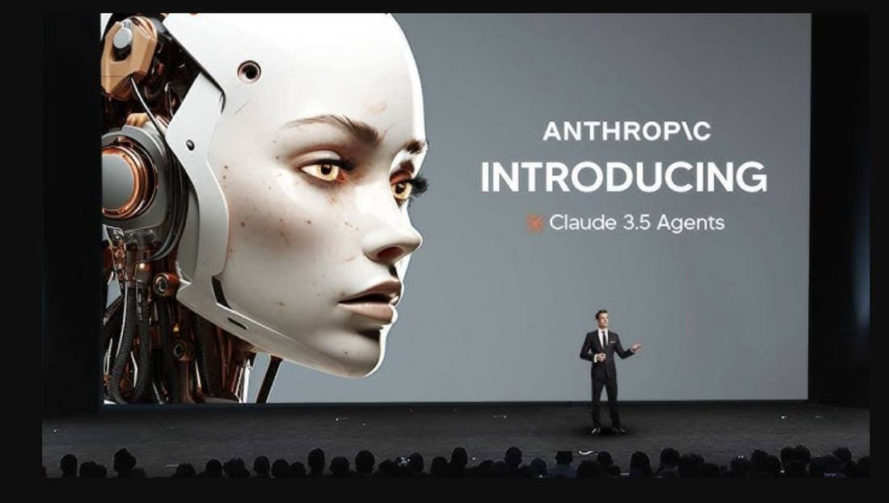
Anthropic Says It Has Met Its Own AI Safety Threshold as AI Speeds Up Its ResearchUpdate to the Anthropic IPO flashes: Anthropic told the SEC in its November 10 IPO prospectus amendment that it has met its own Responsible Scaling Policy threshold for dramatically accelerated AI-driven progress, moving from 'may imminently meet' on November 2 to 'has met' in eight days. The basis is internal estimates and expectations for future models, not observations from current models. METR's November 5 assessment put Anthropic's pace at about 1.9 times its earlier rate since October 2025, with perhaps 80 percent of the speed-up from AI, called the estimates highly uncertain, and said it is plausible the threshold was crossed by July 15. Meeting the threshold triggers additional safeguards, not a halt. IPO pricing is November 18, trading starts November 19 under ticker ANT.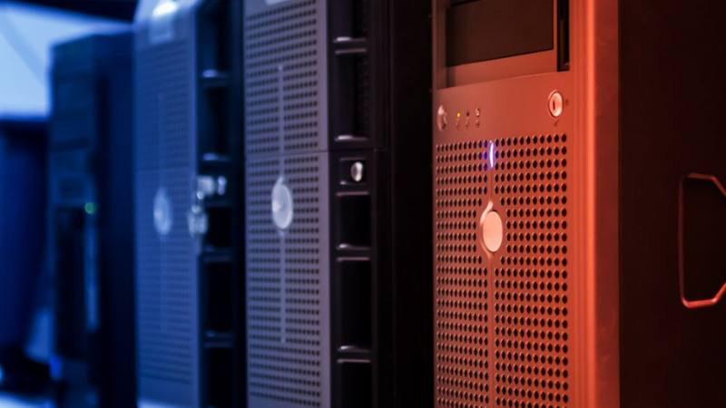
Quanta Posts Record Revenue of NT$1.12 Trillion as AI Servers Take Over 80% of SalesQuanta Computer reported record third-quarter revenue of NT$1.1155 trillion, up 125.2% year on year, as AI servers drove the biggest quarter in the company's history. Gross margin slipped to 4.75% from 6.85% a year earlier as pricier AI racks and rising notebook material costs squeezed profitability, though net profit still climbed 73% to NT$28.42 billion. Servers made up more than 80% of revenue, with AI servers at 75% to 80% of server sales, and management guided servers to 85% to 90% of revenue in 2027.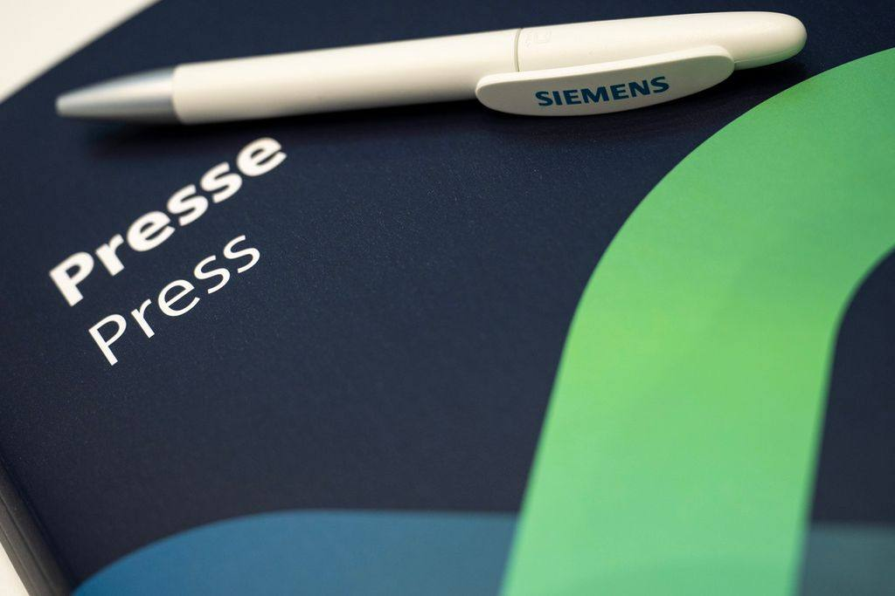
Siemens Closes Fiscal 2026 With Record €34.8 Billion in Orders as AI Data Centers Drive DemandSiemens reported fourth-quarter orders of 34.77 billion euros, up 58% year on year to a quarterly record, as data-center contracts and a 2.4 billion euro German high-speed train order lifted the book. Industrial profit rose 22% to a record 3.89 billion euros, beating the 3.71 billion euro consensus, and revenue rose 11% to 23.68 billion euros. For fiscal 2026, orders reached a record 108.2 billion euros and the backlog hit 143 billion euros. Siemens raised its mid-term growth target to 7% to 11% a year and guided fiscal 2027 revenue growth of 9% to 11%.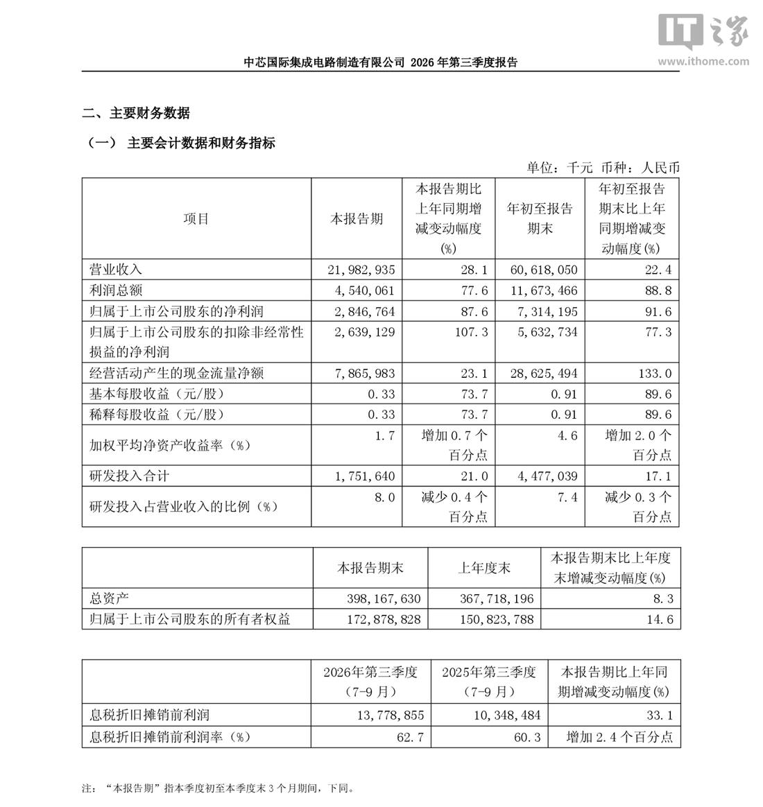
SMIC Q3 Revenue Hits Record $3.19 Billion as Margin Jumps to 29.9%, Beating ForecastsSMIC reported record third-quarter revenue of $3.19 billion, up 33.9% year on year, with gross margin jumping to 29.9% from 25.3% in the second quarter, beating the Visible Alpha consensus on both revenue and profit. Profit attributable to owners was $428.4 million, up 123.4% year on year. Fourth-quarter guidance is revenue growth of 4% to 6% sequentially with gross margin of 26% to 28%.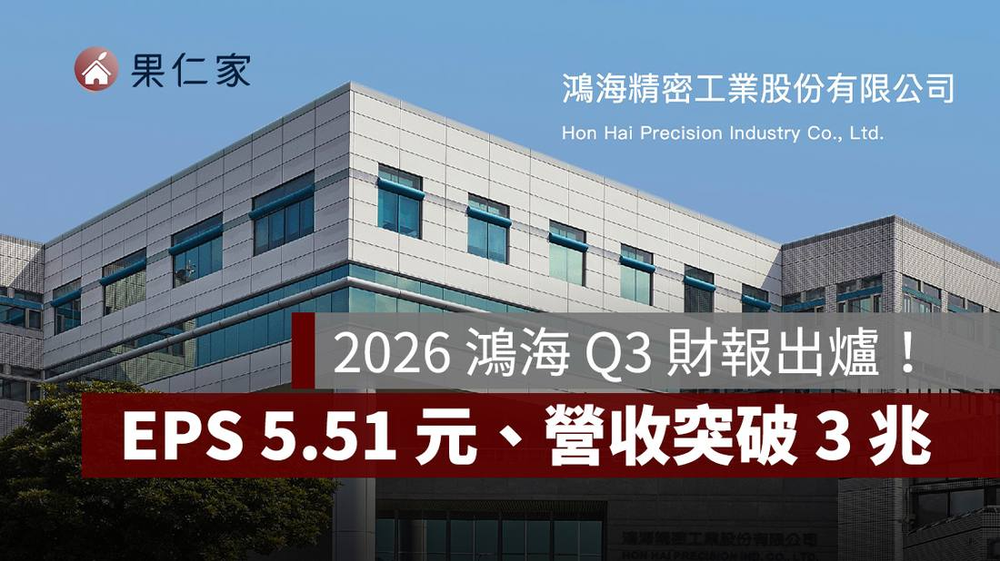
Foxconn Q3 Profit Jumps 34% to NT$77.5 Billion, Beating Forecasts on AI Server DemandFoxconn reported third-quarter net profit of NT$77.5 billion ($2.35 billion), up 34% year on year and ahead of the LSEG consensus of NT$69.6 billion, as AI server demand kept climbing. Revenue was NT$3.02 trillion, up 46%, and EPS came in at NT$5.51. The company held its "strong" full-year revenue growth forecast and predicted high double-digit growth in AI rack shipments in 2027.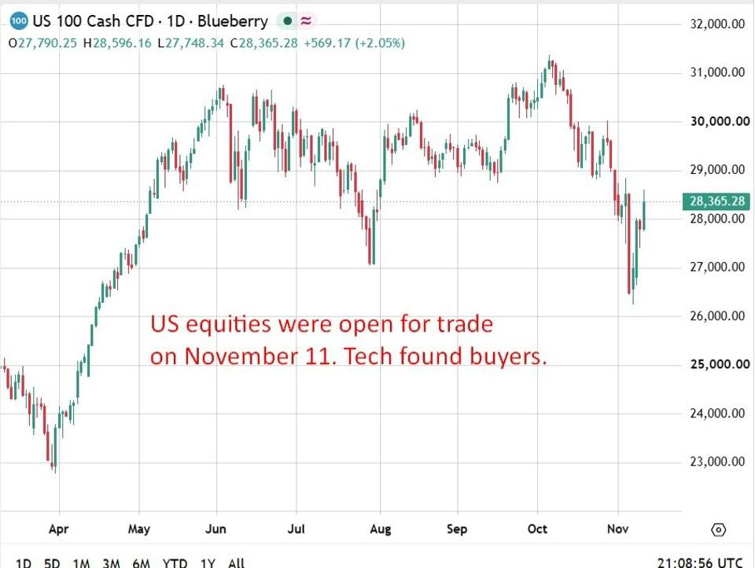
Anthropic IPO Already Multiple Times Oversubscribed, Bloomberg ReportsUpdate to the Anthropic IPO flashes: Anthropic's IPO is already multiple times oversubscribed, Bloomberg reported on November 11, 2026, citing people familiar with the matter, with anchor-sized indications of interest from institutional and individual investors. Shares are marketed at $70 to $78, implying about a $1.4 trillion fully diluted valuation; the IPO plus a $26 billion private placement from seven tech firms targets about $90 billion, topping SpaceX's June record only if priced at the top of the range. Pricing is November 18, trading starts November 19 under ticker ANT. DeepSeek Raises Another $15 Billion, but Compute Runs Short FirstDeepSeek has closed a second external funding round of about 100 billion yuan, with 31 new investors including Tencent and CATL, lifting state-linked ownership to about 27%. In the same week, V4.1 Flash demand surged and free chat began throttling.Claude Ship Arrives, and AI Starts Deciding Which Code Gets MergedAnthropic launched Claude Ship in beta on November 23: three agents take over the pull request pipeline, reviewing code, fixing issues and approving routine changes under each team's policy file, for GitHub Team and Enterprise customers only.$5B Series C Lands, the Largest AI Drug Discovery Raise YetIsomorphic Labs announced on November 17 that it closed a $5 billion Series C, co-led by Greenoaks and Sequoia. The company says preclinical results are encouraging, and the next step is moving drug candidates into human trials.
DeepSeek Raises Another $15 Billion, but Compute Runs Short FirstDeepSeek has closed a second external funding round of about 100 billion yuan, with 31 new investors including Tencent and CATL, lifting state-linked ownership to about 27%. In the same week, V4.1 Flash demand surged and free chat began throttling.Claude Ship Arrives, and AI Starts Deciding Which Code Gets MergedAnthropic launched Claude Ship in beta on November 23: three agents take over the pull request pipeline, reviewing code, fixing issues and approving routine changes under each team's policy file, for GitHub Team and Enterprise customers only.$5B Series C Lands, the Largest AI Drug Discovery Raise YetIsomorphic Labs announced on November 17 that it closed a $5 billion Series C, co-led by Greenoaks and Sequoia. The company says preclinical results are encouraging, and the next step is moving drug candidates into human trials.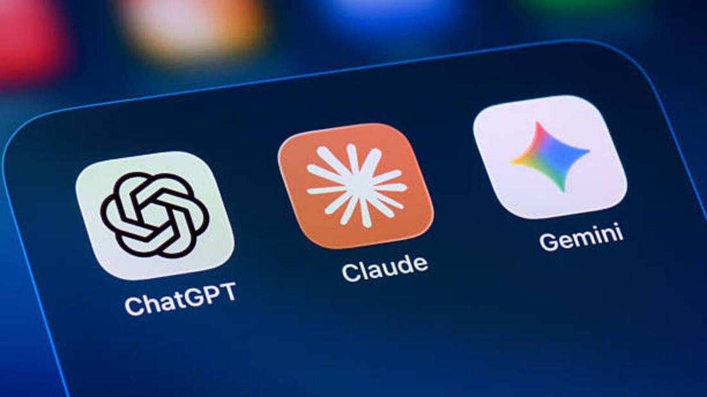
OpenAI Q3 Revenue Tops $10B, Up 50%, as Anthropic Posts Nearly $17BOpenAI's third-quarter revenue hit about $10 billion, up roughly 50% from the prior quarter, The Information reported on November 10, driven by API demand for GPT-5.6 and Astra plus advertising. The annualized run rate reached about $50 billion at the end of September. Anthropic still did better, at nearly $17 billion in the same quarter. The Wall Street Journal, citing documents viewed by the publication, reported operating losses widened to $10.9 billion from $10.1 billion, though the adjusted operating margin improved to -109% from -150%.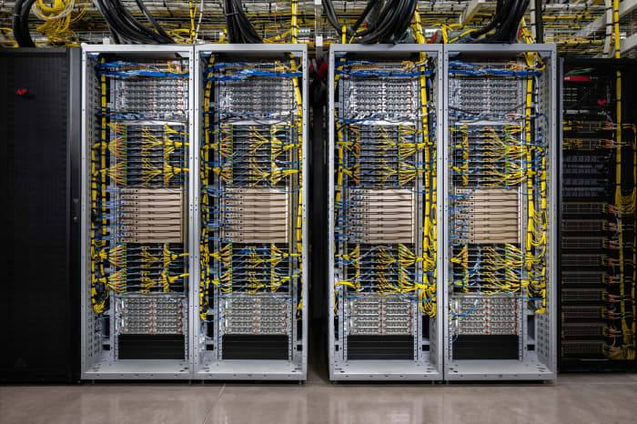
CoreWeave Revenue Jumps 168% to $3.66B, but Interest Still Eats the ProfitCoreWeave reported third-quarter revenue of $3.66 billion, up 168% year over year and ahead of the $3.54 billion consensus, with adjusted operating income of $379 million, up 75%. Interest expense of $846 million still ran at more than twice operating income, and the revenue backlog reached $133 billion. Shares rose about 6% after hours. On the earnings call, management said qualified demand runs about 10 times available capacity through the end of 2027 and pledged no new parent-level unsecured debt at current yields through 2027. Management also set a profitability date: adjusted net income turning positive in the first half of 2028.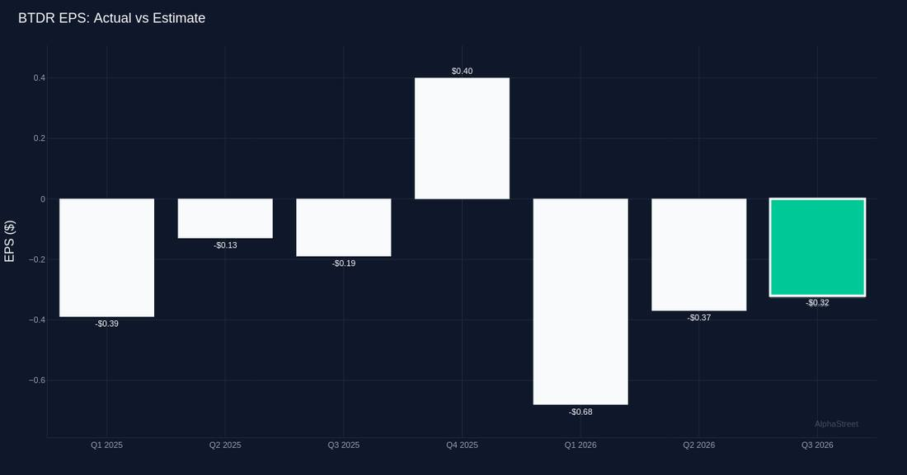
Bitdeer Q3 Revenue Hits Record $320.7M as AI Cloud Backlog Reaches $2.9 BillionBitdeer Technologies Group reported record third-quarter 2026 revenue of $320.7 million, up 89% year over year and ahead of the $258.2 million estimate. Adjusted EBITDA rose 173% to $69.6 million, while net loss widened to $125.5 million and gross margin fell to 3.4%. AI Cloud revenue grew to $20.4 million from $1.8 million, and the AI Cloud revenue backlog reached approximately $2.9 billion, anchored by a $4.7 billion 16-year Tydal, Norway lease.No Chips Shipped Yet, and Britain's Fractile Is Already Worth £5 BillionOn November 11, British AI chip company Fractile announced a $720 million Series C, with the government putting its valuation above £5 billion. The company has shipped no production chips yet, and first deliveries are scheduled for next year. D-Wave Q3 Revenue Up 21% as Bookings Jump 611% and Backlog Hits $38.3 MillionD-Wave Quantum reported third-quarter 2026 revenue of $4.5 million, up 21% year over year and ahead of the $4.33 million IBES estimate. Nine-month bookings reached $37.4 million, up 611%, and remaining performance obligations totaled $38.3 million, up 1,221%. Net loss narrowed to $48.2 million, or $0.13 per share, while operating expenses rose 84% and adjusted EBITDA loss widened 83%. The company signed a definitive agreement for up to $100 million in milestone-contingent CHIPS Act funding.
D-Wave Q3 Revenue Up 21% as Bookings Jump 611% and Backlog Hits $38.3 MillionD-Wave Quantum reported third-quarter 2026 revenue of $4.5 million, up 21% year over year and ahead of the $4.33 million IBES estimate. Nine-month bookings reached $37.4 million, up 611%, and remaining performance obligations totaled $38.3 million, up 1,221%. Net loss narrowed to $48.2 million, or $0.13 per share, while operating expenses rose 84% and adjusted EBITDA loss widened 83%. The company signed a definitive agreement for up to $100 million in milestone-contingent CHIPS Act funding.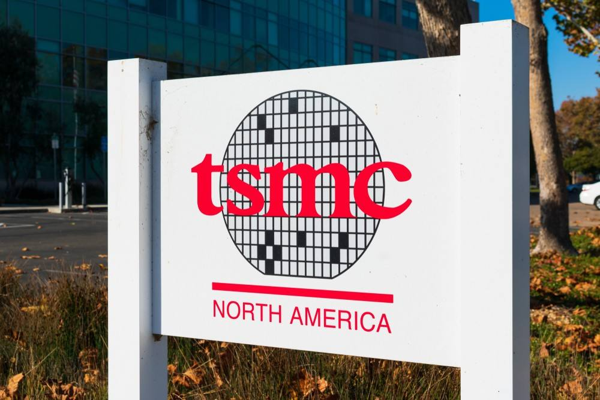
TSMC October Revenue Jumps 59.7% to Record NT$586.9 Billion on AI DemandTSMC reported October 2026 consolidated revenue of NT$586.89 billion (about US$17.9 billion), up 59.7% year over year and up 14.7% from September, an all-time monthly record. The growth rate accelerated from 54.6% in September, and January-October revenue already exceeds TSMC's full-year 2025 total. Fourth-quarter guidance is US$52.3 billion to US$54.3 billion. Anthropic Launches IPO Roadshow at $70–$78, Targeting Up to $64.4 BillionAnthropic launched the roadshow for its initial public offering on November 10, 2026, pricing 825 million Class A shares at an expected $70 to $78 each, a deal that could raise up to $64.4 billion. A separate $26 billion private placement from seven strategic partners takes total fundraising to as much as $90.4 billion.MARKETS & INDUSTRYMediaTek October Sales Rise 5.77% as AI Accelerator Ramp Awaits NovemberMediaTek reported October 2026 consolidated revenue of NT$55.026 billion, up 5.77% year over year and down 0.67% from September, a soft start to a fourth quarter guided at NT$210.1-221.8 billion. The US$2.5 billion of AI accelerator revenue management expects this quarter has yet to show in the monthly print, so the November release is the check.Nvidia in Talks to Buy Diffusion Startup Inception for at Least $500 MillionOn November 20, 2026, The Information reported that Nvidia is in advanced talks to acquire diffusion-model startup Inception for at least $500 million. Its Mercury models generate whole passages of text in parallel, and the founders are expected to join full time.MARKETS & INDUSTRYASE October Revenue Jumps 47.1% as Chip Packaging Demand Keeps ClimbingASE Technology reported October 2026 consolidated revenue of NT$88.615 billion (US$2.779 billion), up 47.1% year over year, with its core assembly, testing and material business up 57.7% to NT$56.840 billion. The print extends a third quarter in which packaging and testing revenue grew 51.0%, and management has guided fourth-quarter revenue to grow 6 to 8 percent sequentially.
Anthropic Launches IPO Roadshow at $70–$78, Targeting Up to $64.4 BillionAnthropic launched the roadshow for its initial public offering on November 10, 2026, pricing 825 million Class A shares at an expected $70 to $78 each, a deal that could raise up to $64.4 billion. A separate $26 billion private placement from seven strategic partners takes total fundraising to as much as $90.4 billion.MARKETS & INDUSTRYMediaTek October Sales Rise 5.77% as AI Accelerator Ramp Awaits NovemberMediaTek reported October 2026 consolidated revenue of NT$55.026 billion, up 5.77% year over year and down 0.67% from September, a soft start to a fourth quarter guided at NT$210.1-221.8 billion. The US$2.5 billion of AI accelerator revenue management expects this quarter has yet to show in the monthly print, so the November release is the check.Nvidia in Talks to Buy Diffusion Startup Inception for at Least $500 MillionOn November 20, 2026, The Information reported that Nvidia is in advanced talks to acquire diffusion-model startup Inception for at least $500 million. Its Mercury models generate whole passages of text in parallel, and the founders are expected to join full time.MARKETS & INDUSTRYASE October Revenue Jumps 47.1% as Chip Packaging Demand Keeps ClimbingASE Technology reported October 2026 consolidated revenue of NT$88.615 billion (US$2.779 billion), up 47.1% year over year, with its core assembly, testing and material business up 57.7% to NT$56.840 billion. The print extends a third quarter in which packaging and testing revenue grew 51.0%, and management has guided fourth-quarter revenue to grow 6 to 8 percent sequentially. The Mid-Tier Arrives: Gemini 4 Neon Charges by the TaskOn November 18, Google launched Gemini 4 Neon, the middle tier of the Gemini 4 family. Input costs $3 per million tokens and output $15, with each task costing 32% less than flagship Carbon, and its coding-agent index ranks first.
The Mid-Tier Arrives: Gemini 4 Neon Charges by the TaskOn November 18, Google launched Gemini 4 Neon, the middle tier of the Gemini 4 family. Input costs $3 per million tokens and output $15, with each task costing 32% less than flagship Carbon, and its coding-agent index ranks first.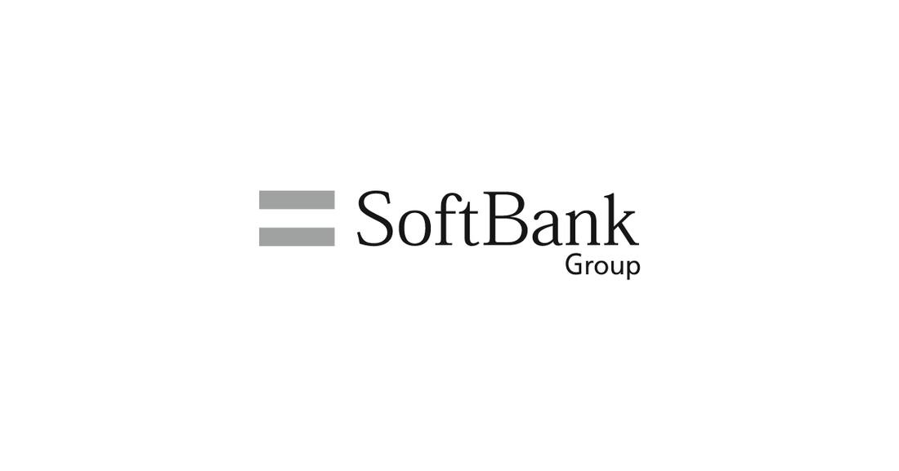
SoftBank Swings to ¥1.1 Trillion Net Loss in Q2 as OpenAI Gain ReversesSoftBank Group swung to a net loss of 1.1 trillion yen ($7 billion) in the July-September quarter, it reported on November 10, 2026, against a 2.5 trillion yen profit a year earlier when OpenAI valuation gains drove a record result. The loss missed even the most pessimistic analyst forecast, a 113 billion yen loss, by roughly ten times, and it came after shares rose sharply in Tokyo trading on AI-translated coverage claiming a profit beat that the official result contradicts.MARKETS & INDUSTRYWix Q3 Revenue Hits $570 Million as Base44 Nears $250 Million ARRWix reported third-quarter 2026 revenue of $570.2 million, up 13% year over year, driven by Base44, its AI app-building product, which is now nearing $250 million in annual recurring revenue. Base44's non-GAAP gross margin reached 58%, up from near zero in the first quarter, as Wix's proprietary Base 1 model cut AI inference costs, while Wix trimmed its full-year free cash flow margin outlook to about 16% on accelerated Base44 marketing spend.Anthropic Targets Nov. 19-20 Debut as Price Range Is RetractedAnthropic is targeting a Nasdaq debut on November 19 or 20 under the ticker ANT, the Wall Street Journal reported on November 9, with roadshow marketing starting November 10 and a valuation-range filing expected early this week. The expected valuation has fallen to $1.0 trillion to $1.3 trillion from $2 trillion in early-October talks, and a reported $70 to $80 per-share price range was retracted by Anthropic as inaccurate hours after it surfaced.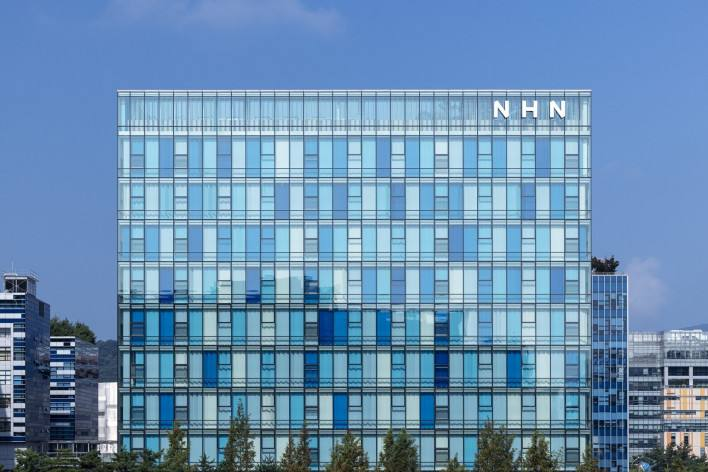
NHN Posts Record Quarter as AI Cloud Revenue Jumps 75%NHN reported a record third quarter on November 10, 2026, with revenue of 758.3 billion won, up 21.2 percent year over year, and operating profit of 58.8 billion won, up 112.6 percent, both quarterly highs. NHN Cloud revenue rose 75.5 percent on AI GPU work at FactoryX Seoul, and the company plans 100 MW of AI data center capacity by end-2027, with 1,700 B300 GPUs entering service from December and roughly 4 trillion won of government AI GPU projects in view for next year.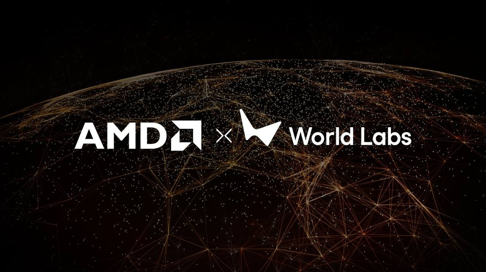
AMD Absorbs Fei-Fei Li's Team in an $8.2B Deal, Putting Models on the Chip RoadmapAMD announced on November 16, 2026 that it had completed its acquisition of World Labs, an all-stock deal worth about $8.2 billion. Fei-Fei Li becomes executive vice president and chief scientist, reporting directly to Lisa Su, as world models formally enter a chip company's roadmap.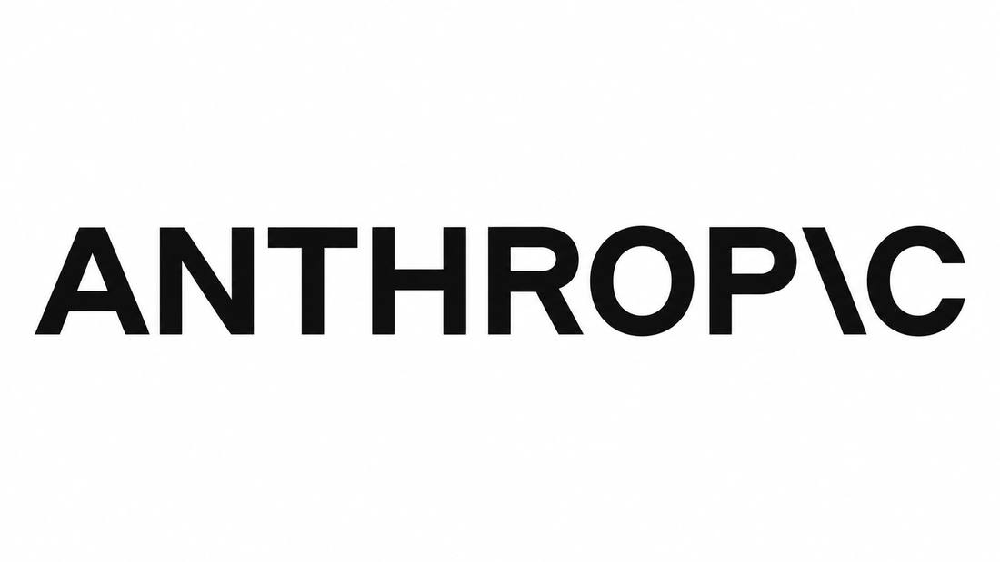
Largest IPO in History Gains 17% on Day One; Anthropic Valued at $1.75 TrillionAnthropic priced at $83 a share on November 18, 2026, and listed on Nasdaq on November 19, closing day one at $97.17, up 17%. The $81.3 billion raise is the largest IPO on record, and each of the seven founders cashed out about $280 million.HIVE Digital Posts $84.9M Q2 Revenue as $84.5M Swedish VAT Provision Drives $78.7M LossHIVE Digital Technologies reported fiscal Q2 2027 revenue of $84.9 million, down 2.7 percent year over year, with a net loss of $78.7 million driven by an $84.5 million Swedish VAT provision and impairment charges, while cash rose to $139.0 million after $245 million in exchangeable note offerings to fund its AI and high-performance computing buildout.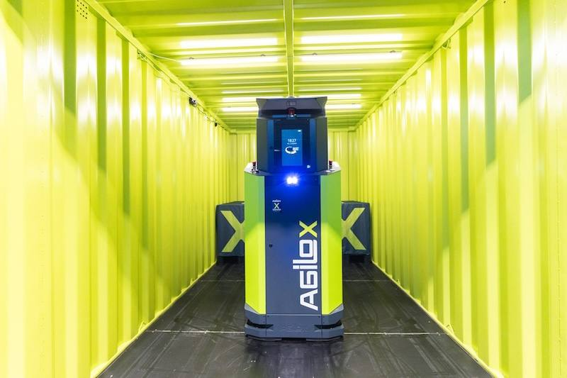
Rockwell Buys Austria's AGILOX; Mobile Robotics More Than DoublesRockwell Automation signed a definitive agreement on November 18, 2026, to acquire Austrian mobile robot maker AGILOX, price undisclosed. AGILOX's forklift-style robots are deployed at more than 2,500 units worldwide, complementing Rockwell's own OTTO flatbed platform and more than doubling its mobile robotics business.Rocket Lab Posts Record $268M Quarter as Backlog Jumps 52% to $3.57BRocket Lab reported record third-quarter 2026 revenue of $267.8 million, up 73 percent year over year and ahead of consensus, with a record $3.57 billion backlog, up 52 percent in one quarter, as Neutron secured more than $515 million in new contracts. The net loss widened to $79.7 million and missed earnings expectations, sending shares lower after hours despite an 11 percent gain in the regular session.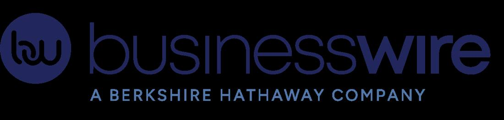
Zeta Global's 21st Straight Beat-and-Raise: Revenue Up 46% as GAAP Profit Turns PositiveZeta Global reported third-quarter 2026 revenue of $492.7 million, up 46.1 percent year over year and ahead of the $471.2 million consensus, with GAAP net income of $38 million, or $0.14 per diluted share, its first positive GAAP profit on a year-to-date and trailing-twelve-month basis. Adjusted EBITDA reached $121 million at a 24.6 percent margin, and the company raised full-year revenue guidance by $37 million to $1,855 million at the midpoint, its 21st consecutive beat-and-raise quarter.Qualys Beats on Q3 Revenue and Lifts Its Outlook as AI Security Tools Gain GroundQualys reported third-quarter 2026 revenue of $188.0 million, up 11 percent year over year and ahead of the $186.6 million consensus, with GAAP net income of $57.2 million and non-GAAP earnings per share of $2.12, as it launched AI-led security products including InstaScan and expanded TotalAI governance. The company raised full-year revenue guidance to $736.9 million to $738.9 million and non-GAAP earnings per share guidance to $8.07 to $8.14.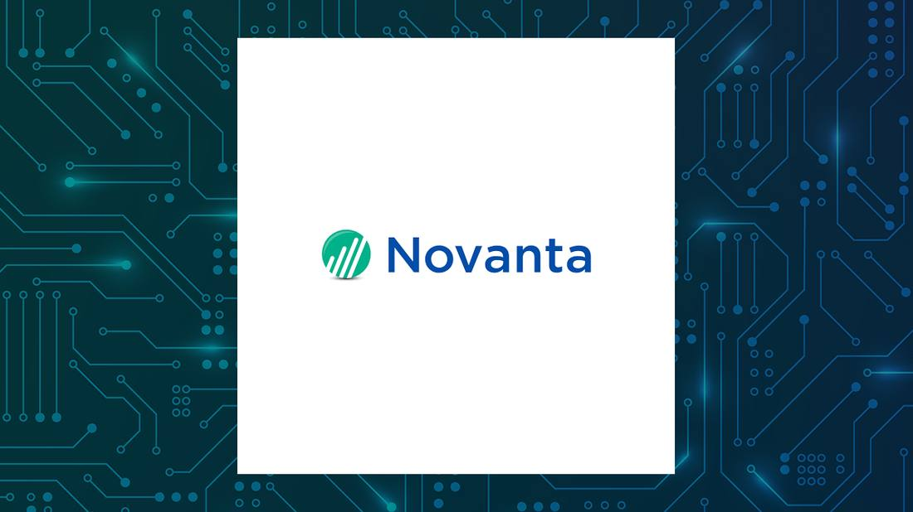
Novanta Beats on Revenue and Adjusted Profit as Bookings Jump 29%Novanta reported third-quarter 2026 revenue of $305.0 million, up 23.1 percent year over year and ahead of the $301.0 million consensus, with adjusted earnings per share of $1.05 against $0.97 expected, as customer bookings rose 29 percent and backlog reached $543 million. GAAP profit fell on acquisition-related items in the quarter it closed the largest deal in its history, while the company guided fourth-quarter revenue of $306 million to $312 million and 2027 revenue growth above 15 percent.MARKETS & INDUSTRYOnto Innovation's Record Quarter: Revenue Jumps 88% as AI Chip Inspection Demand SurgesOnto Innovation reported record third-quarter 2026 revenue of $409.7 million, up 87.8 percent year over year, with non-GAAP earnings of $2.44 per diluted share, as demand for process control in AI and high-performance computing pushed its backlog past $1.3 billion. Management guided full-year 2026 revenue growth above 45 percent and set fourth-quarter revenue guidance of $430 million to $450 million.Constellation Q3 Revenue Jumps 45% to $9.55B as Calpine Powers EPS BeatConstellation Energy reported third-quarter 2026 revenue of $9.55 billion on November 9, 2026, up 45% year over year and above consensus, with adjusted operating EPS of $5.06 beating the $3.90 consensus and GAAP diluted EPS of $5.19. The company raised its full-year 2026 adjusted operating EPS guidance to $12.50-$12.80 and agreed to acquire the 609 MW Rhode Island State Energy Center for $715 million, as its Amazon and Google nuclear power agreements position it as a key electricity supplier for the AI buildout.Anthropic Goes Public, Amazon and Google Take Nearly 30%A revised filing dated November 17 disclosed that Amazon will hold 14.7% of Anthropic after the IPO and Google 13.7%, a combined 28.4%, all in non-voting shares. Seven more tech companies agreed to subscribe for $26 billion of the same class of shares, and pricing guidance has already reached the top of the range.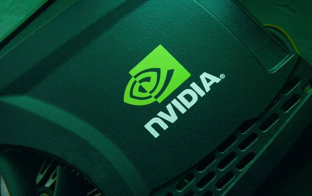
Earnings Tonight: Nvidia Faces a $109 Billion TestNvidia reports fiscal 2027 third-quarter results after the close on November 17 ET, with consensus expecting revenue to nearly double year over year; the data center remains the engine, and the call will focus on fourth-quarter guidance. NVIDIA Earnings: Three Tests Beyond RevenueNVIDIA reports fiscal Q3 2027 results, with the market expecting revenue of about $109 billion, nearly double a year earlier. Revenue is not the question. What sets the price is the quality of that growth: gross margin, Vera Rubin ramp, and questions over circular financing.
NVIDIA Earnings: Three Tests Beyond RevenueNVIDIA reports fiscal Q3 2027 results, with the market expecting revenue of about $109 billion, nearly double a year earlier. Revenue is not the question. What sets the price is the quality of that growth: gross margin, Vera Rubin ramp, and questions over circular financing. Oklo Posts First Revenue of $1.86M as Q3 Loss Widens to $41.7M, Liquidity Hits $3.13BOklo posted its first revenue of $1.86 million in the third quarter of 2026, from services at the ARMEC and CEI businesses acquired in June, while the net loss widened 40.5% to $41.75 million, or $0.22 per share, narrower than the roughly $0.24 to $0.27 loss analysts expected. Liquidity reached $3.13 billion after the company issued 32.6 million shares for $2.25 billion in net proceeds in the first nine months. The Groves Isotope Test Reactor achieved first criticality in August 2026, the DOE approved the Aurora-ID safety analysis in June, and the 12 GW Switch master power agreement and Meta prepayment framework stand behind the 2028-2029 deployment targets.
Oklo Posts First Revenue of $1.86M as Q3 Loss Widens to $41.7M, Liquidity Hits $3.13BOklo posted its first revenue of $1.86 million in the third quarter of 2026, from services at the ARMEC and CEI businesses acquired in June, while the net loss widened 40.5% to $41.75 million, or $0.22 per share, narrower than the roughly $0.24 to $0.27 loss analysts expected. Liquidity reached $3.13 billion after the company issued 32.6 million shares for $2.25 billion in net proceeds in the first nine months. The Groves Isotope Test Reactor achieved first criticality in August 2026, the DOE approved the Aurora-ID safety analysis in June, and the 12 GW Switch master power agreement and Meta prepayment framework stand behind the 2028-2029 deployment targets.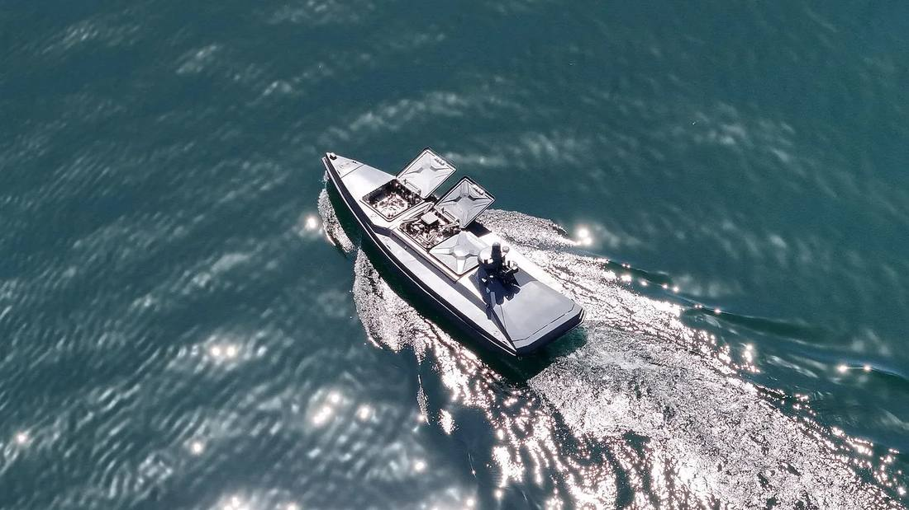
$700 Million Series A, Drone Maker UFORCE's Valuation Up Sixfold in Six MonthsUkraine-rooted drone company UFORCE announced a $700 million Series A on November 12, at a $6 billion valuation. Valor Equity Partners and the UK National Wealth Fund co-led, with the money going to scale up drone-system production.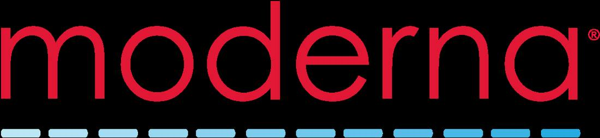
Moderna Swings to $162M Profit as Q3 Revenue Hits $1.31B, Crushing EstimatesModerna reported third-quarter 2026 revenue of $1.31 billion, up 29% year over year and far above the $885.1 million analysts expected, swinging to net income of $162 million, or $0.38 per share, against a $200 million loss a year earlier. The company raised full-year 2026 revenue growth guidance to 15% to 25% from up to 10% and lifted its year-end cash outlook to $8.1 billion to $8.3 billion. The FDA-approved flu vaccine mFLUSIVA and the Phase 3 melanoma vaccine intismeran autogene, which cut recurrence-or-death risk by 42%, are the pipeline drivers ahead. Monster Q3 Sales Hit a Record $2.56B on International Growth, but Margins Squeeze SharesMonster Beverage reported third-quarter 2026 net sales of $2.563 billion, up 16.7% year over year to a record, beating the roughly $2.49 billion analysts expected, according to reports on the company's results released after the market close on November 5, 2026. Net income rose 8.4% to $568.4 million, diluted earnings were $0.29 per share, and adjusted earnings of $0.30 matched consensus. International sales rose 28.1% to $1.20 billion, or 47% of total revenue, with Latin America up 49%. Gross margin slipped to 54.7% from 55.7%, and shares fell 6.2% in after-hours trading.BILL Q1 Profit Beats, but an Accounting Change Makes Revenue Look Like a MissBILL Holdings reported fiscal first-quarter 2027 total revenue of $353.8 million, up 13% year over year, and core revenue of $316.4 million, up 14.3%, according to the company's official results released after the market close on November 5, 2026. Non-GAAP earnings were $1.18 per share, beating the $0.98 consensus, and GAAP net income was $60.3 million versus a $3.0 million loss a year earlier. The apparent revenue miss against the $438.7 million consensus is an accounting-presentation artifact: card rewards are now recorded as a reduction of revenue. Management raised full-year profit guidance, with non-GAAP operating income now expected at $466 million to $486 million.
Monster Q3 Sales Hit a Record $2.56B on International Growth, but Margins Squeeze SharesMonster Beverage reported third-quarter 2026 net sales of $2.563 billion, up 16.7% year over year to a record, beating the roughly $2.49 billion analysts expected, according to reports on the company's results released after the market close on November 5, 2026. Net income rose 8.4% to $568.4 million, diluted earnings were $0.29 per share, and adjusted earnings of $0.30 matched consensus. International sales rose 28.1% to $1.20 billion, or 47% of total revenue, with Latin America up 49%. Gross margin slipped to 54.7% from 55.7%, and shares fell 6.2% in after-hours trading.BILL Q1 Profit Beats, but an Accounting Change Makes Revenue Look Like a MissBILL Holdings reported fiscal first-quarter 2027 total revenue of $353.8 million, up 13% year over year, and core revenue of $316.4 million, up 14.3%, according to the company's official results released after the market close on November 5, 2026. Non-GAAP earnings were $1.18 per share, beating the $0.98 consensus, and GAAP net income was $60.3 million versus a $3.0 million loss a year earlier. The apparent revenue miss against the $438.7 million consensus is an accounting-presentation artifact: card rewards are now recorded as a reduction of revenue. Management raised full-year profit guidance, with non-GAAP operating income now expected at $466 million to $486 million.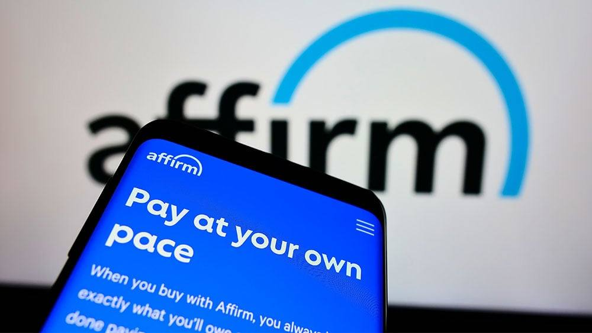
Affirm Q1 Revenue Jumps 35% to $1.26B, but Delinquencies Push Shares DownAffirm Holdings reported fiscal first-quarter 2027 revenue of $1.262 billion, up 35% year over year, beating the roughly $1.213 billion analysts expected, according to reports on the company's results released after the market close on November 5, 2026. Earnings were $0.47 per share, up 104% from a year earlier and above the $0.35 consensus, while gross merchandise volume rose 34% to $14.4 billion. Loans 30 or more days past due rose 35 basis points sequentially to 2.9%, and shares fell more than 9% in after-hours trading. The company forecast second-quarter gross merchandise volume of $17.9 billion to $18.2 billion, above estimates.DraftKings Q3 Loss Widens as It Slashes 2026 Outlook to Fund Prediction MarketsDraftKings reported third-quarter 2026 revenue of $1.329 billion, up 16% year over year but below the roughly $1.40 billion analysts expected, according to the company's official results release published through Business Wire on November 5, 2026. The net loss widened to $468.7 million, or $0.94 per share, and adjusted EBITDA swung to a loss of $316.9 million. The company cut its full-year 2026 adjusted EBITDA guidance to $175 million to $275 million, down from $700 million to $900 million, to fund a $650 million to $700 million push into prediction markets. Shares fell 24% in after-hours trading.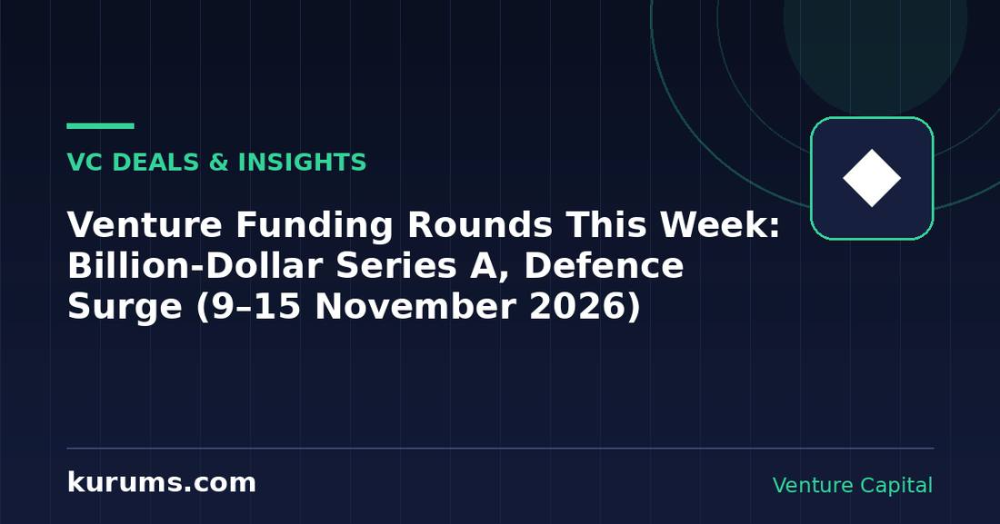
A $1 Billion Series A for a Lab That Wants AI to Do the Research ItselfMirendil, founded by former Anthropic researchers, announced a $1 billion Series A on November 12, co-led by Kleiner Perkins and Clearlake Capital. One researcher directing agents pre-trained a coding model from scratch in three and a half months, using under $10 million of compute.Airbnb Q3 Revenue Jumps 19% to $4.87B, Fastest Growth in Three YearsAirbnb reported third-quarter 2026 revenue of $4.87 billion, up 19% year over year, its fastest revenue growth in more than three years, beating the roughly $4.75 billion consensus, according to the company's official results published on November 5, 2026. Gross booking value grew 21% to $27.7 billion, nights and seats booked rose 16% to 155 million, and net income reached $1.9 billion. The company authorized a new $12 billion share repurchase and raised its full-year 2026 revenue growth outlook to the high teens. Shares jumped about 11% in after-hours trading, against a session in which the Nasdaq Composite fell 5.52%.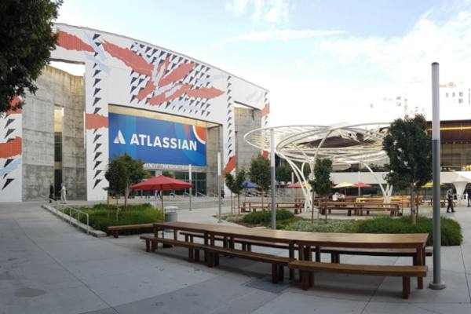
Atlassian Beats on Q1 Revenue, Shares Fall 17% on Slower Subscription OutlookAtlassian reported first-quarter fiscal 2027 revenue of $1,772 million, up 24% year over year, beating the $1.71 billion analysts expected, according to the company's official results release published through Business Wire on November 5, 2026. Cloud revenue rose 31% to $1,302 million and adjusted earnings per share were $1.65, above the $1.43 consensus. Shares fell more than 17% in after-hours trading as the company guided subscription annual recurring revenue growth to slow to about 18.5% by fiscal year-end.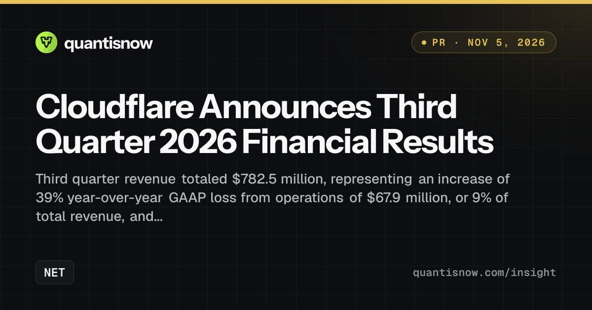
Cloudflare Q3 Revenue Jumps 39% to $782.5M, Fastest Growth in Four YearsCloudflare reported third-quarter 2026 revenue of $782.5 million, up 39% year over year, its fastest growth in nearly four years, beating the roughly $737 million consensus, according to the company's official results release published through Business Wire on November 5, 2026. Non-GAAP earnings were $0.38 per share, the company crossed $3 billion in annualized revenue, and it guided fourth-quarter revenue to $845 million to $846 million. Shares surged about 17% in after-hours trading, against a session in which the Nasdaq Composite fell 5.52%.Anthropic IPO Roadshow in Doubt as Investors Balk at $1.5T ValuationReuters reported on November 5, 2026 that potential investors in Anthropic's IPO are raising doubts about whether the company can proceed with its planned roadshow next week in time for a November listing, with some viewing the recently discussed $1.5 trillion valuation as the high end of expectations. The Wall Street Journal separately reported investor skepticism on the $1.5 trillion figure. The roadshow was expected to kick off the week of November 9, and Anthropic declined to comment.MARKETS & INDUSTRYAOSL Q1 Revenue $177.8M as AI Server Sales Surge 250%Alpha and Omega Semiconductor reported fiscal first-quarter 2027 revenue of $177.8 million on November 5, 2026, up 4.3% sequentially, with GAAP net loss per share of $0.20. AI and Server revenue grew more than 65% sequentially and 250% year over year to over 20% of total revenue, lifting gross margin to 24.5%. The company guided fiscal second-quarter revenue to approximately $180 million. Shares fell 12.7% in the regular session, before the results were released after the close.6x Oversubscribed, Anthropic's IPO Pricing Enters the CountdownBloomberg reported that subscriptions for Anthropic's offering had reached roughly 6 times the shares on offer by November 12. Pricing is set for November 18, with a Nasdaq listing under ANT on November 19 and a valuation of up to approximately $1.4 trillion. Arteris Q3 Revenue Jumps 48% to $25.8M, Beating EstimatesArteris reported third-quarter 2026 revenue of $25.77 million on November 5, 2026, up 48.1% year over year and above the $24.57 million consensus, with non-GAAP EPS of a $0.02 loss beating estimates. Annual Contract Value rose to $94.4 million, licensing revenue grew 41% and variable royalties 52%, while the GAAP net loss widened to $11.15 million. Shares fell 12.0% in the regular session, before the results were released after the close.
Arteris Q3 Revenue Jumps 48% to $25.8M, Beating EstimatesArteris reported third-quarter 2026 revenue of $25.77 million on November 5, 2026, up 48.1% year over year and above the $24.57 million consensus, with non-GAAP EPS of a $0.02 loss beating estimates. Annual Contract Value rose to $94.4 million, licensing revenue grew 41% and variable royalties 52%, while the GAAP net loss widened to $11.15 million. Shares fell 12.0% in the regular session, before the results were released after the close.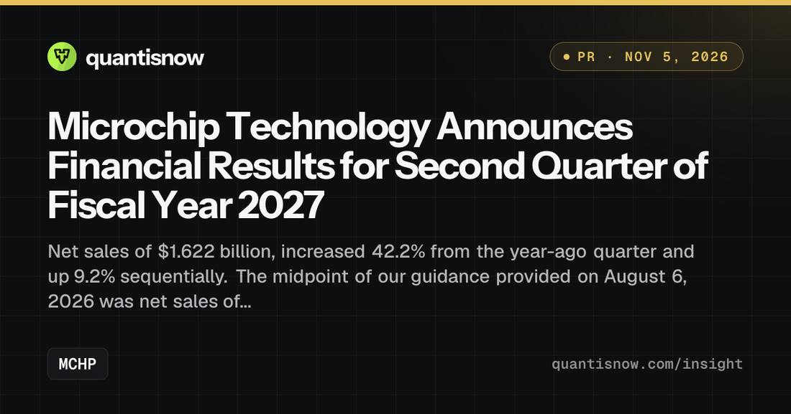
Microchip Q2 Sales Jump 42% to $1.62B, Topping GuidanceMicrochip Technology reported second-quarter fiscal 2027 net sales of $1.622 billion on November 5, 2026, up 42.2% year over year and above the high end of guidance, with non-GAAP EPS of $0.97 beating the $0.94 consensus. The company guided December-quarter sales to down 3% to up 1% sequentially and flagged $53 million of one-time revenue that will not repeat, while PCIe Gen6 design wins doubled to 24. Shares fell 13.9% in the regular session, before the results were released after the close.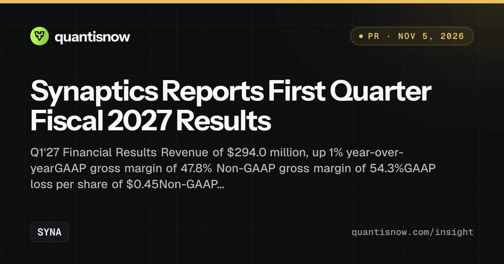
Synaptics Q1 Revenue Misses at $294M as Onsemi Deal Goes QuietSynaptics reported first-quarter fiscal 2027 revenue of $294.0 million on November 5, 2026, up 1% year over year but about 7% below the $315.56 million consensus, with non-GAAP net income of $51.5 million, or $1.26 per diluted share. The company introduced its Astra SR200 xMCU edge AI product line but gave no forward outlook and held no earnings call because of its pending all-cash acquisition by onsemi, restructured from all-stock on October 1, 2026. Shares fell 0.9% in the regular session.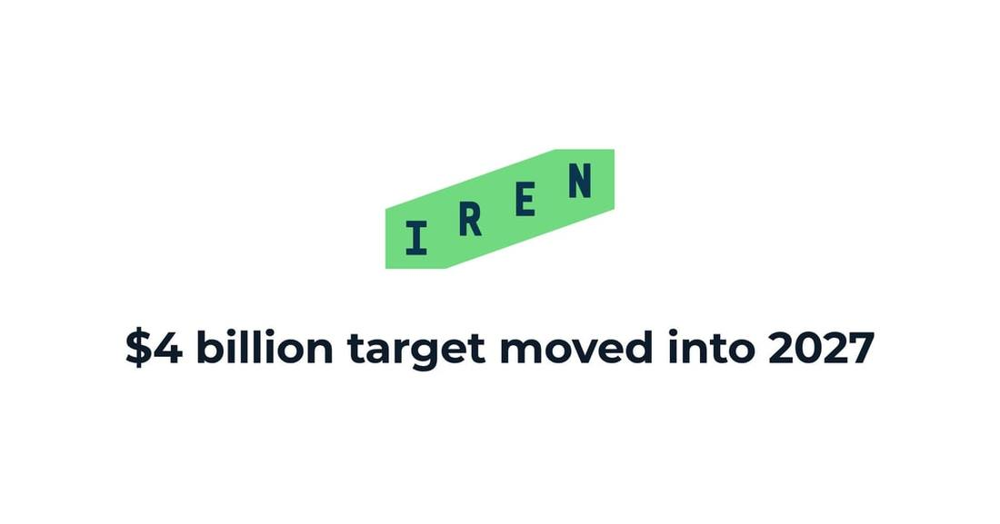
IREN AI Cloud Revenue Nearly Triples to $200M as $4B Target Slips to 2027IREN reported fiscal first-quarter 2027 revenue of $228 million on November 5, 2026, up 66% sequentially, with AI cloud revenue nearly tripling to $200 million, up 182%, and adjusted EBITDA of $66 million. But the company pushed its target for more than $4 billion in contracted annualized run-rate revenue from the end of 2026 to January 31, 2027, possibly late February, and disclosed that $6 billion of its remaining $15 billion of fiscal 2027 capital spending depends on market conditions. Shares fell 17.0% in the regular session, then rebounded 9.6% after hours.MARKETS & INDUSTRYTeradata Q3 Revenue Falls 4% to $399M as Cloud ARR Grows 11%Teradata reported third-quarter 2026 revenue of $399 million on November 5, 2026, down 4% year over year but slightly above consensus, with public cloud ARR up 11% to $700 million and non-GAAP diluted EPS of $0.70 beating the $0.58 consensus. The company raised its full-year earnings guidance and narrowed its revenue outlook to the high end, while launching Teradata Factory, Tera Context Engine and Tera Harness as its agentic AI push. Shares fell 5.5% in the regular session.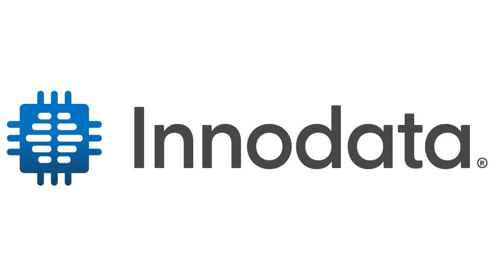
Innodata's AI Data Revenue Jumps 53% to a Record $95.6MInnodata reported record third-quarter 2026 revenue of $95.6 million, up 53% year over year and about 15% above analyst consensus, its 13th consecutive quarter of growth. Adjusted EBITDA was $17.7 million, net income rose 24% to $10.3 million, and full-year 2026 revenue growth guidance was raised to 42% or more. The company is pitching a new physical AI data business, with a motion capture lab launched in September and pilots under way with frontier and robotics labs; shares fell 10.8% despite the beat.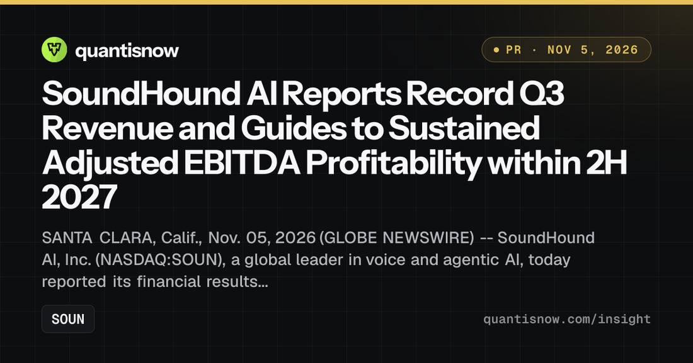
SoundHound Posts Record Q3 Revenue of $62.4M, Guides to Profitability in Late 2027SoundHound AI reported record third-quarter 2026 revenue of $62.4 million, up 48.5% year over year, in its first quarter including LivePerson, acquired September 4, 2026. The GAAP net loss was $46.4 million and adjusted EBITDA was a loss of $20.7 million. The company guided full-year 2026 revenue to $250 million to $260 million and 2027 revenue to $350 million to $400 million, and said it expects sustained adjusted EBITDA profitability within the second half of 2027. LangChain Raises Another $300 Million as Its Valuation Doubles to $3 BillionLangChain announced on November 13 that it has closed a $300 million Series C, a valuation roughly 2.4 times its Series B of a year ago. The money goes into the LangSmith platform, betting that agent governance becomes the next bottleneck.
LangChain Raises Another $300 Million as Its Valuation Doubles to $3 BillionLangChain announced on November 13 that it has closed a $300 million Series C, a valuation roughly 2.4 times its Series B of a year ago. The money goes into the LangSmith platform, betting that agent governance becomes the next bottleneck.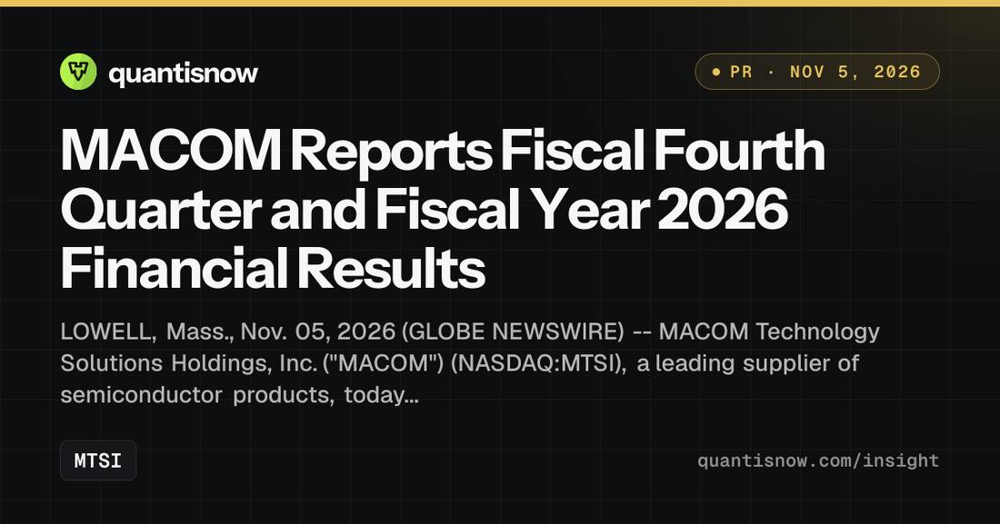
MACOM's Data-Center Quarter Jumps 63% as Optical Demand Lifts Margins and the GuideMACOM reported fiscal fourth-quarter 2026 revenue of $424.8 million, up 62.7% year over year and ahead of the roughly $420.35 million consensus, with adjusted earnings of $2.09 per diluted share against a $2.00 consensus. Adjusted gross margin widened to 61.3%, and the company guided first-quarter fiscal 2027 revenue to $450 million to $460 million with adjusted earnings of $2.21 to $2.29 per share.Core Scientific's Colocation Revenue Jumps 58% as the Miner Turn Becomes an AI LandlordCore Scientific reported third-quarter 2026 revenue of $232.9 million, ahead of the $196.36 million consensus, as colocation revenue jumped nearly 60% sequentially to $215.4 million and adjusted EBITDA margins expanded to 57%. The company was billing for 485 megawatts at quarter end, representing over $700 million in average annualized colocation revenue, while the $1.18 billion net income was driven by a non-cash warrant gain rather than operations. Foxconn October Revenue Jumps 45.7% as AI Server Demand HoldsFoxconn's October 2026 revenue rose 45.73% year over year, Reuters reported on November 5, 2026. On Hon Hai's reported October 2025 base of NT$895.7 billion, the rise implies about NT$1.31 trillion, a second straight month above NT$1 trillion after September's record NT$1.1586 trillion. The company reports full third-quarter earnings on November 12.Coherent Q1 FY27: Revenue Up 50% to $2.37B as AI Optics Hit 82% of SalesCoherent reported first-quarter fiscal 2027 revenue of $2.37 billion, up 49.9% year over year, with non-GAAP EPS of $2.09, up 80%, as Datacenter and Communications revenue rose 79% to $1.95 billion. The company guided second-quarter revenue to $2.55 billion to $2.75 billion and expects fiscal 2027 pro forma growth above 60%.
Foxconn October Revenue Jumps 45.7% as AI Server Demand HoldsFoxconn's October 2026 revenue rose 45.73% year over year, Reuters reported on November 5, 2026. On Hon Hai's reported October 2025 base of NT$895.7 billion, the rise implies about NT$1.31 trillion, a second straight month above NT$1 trillion after September's record NT$1.1586 trillion. The company reports full third-quarter earnings on November 12.Coherent Q1 FY27: Revenue Up 50% to $2.37B as AI Optics Hit 82% of SalesCoherent reported first-quarter fiscal 2027 revenue of $2.37 billion, up 49.9% year over year, with non-GAAP EPS of $2.09, up 80%, as Datacenter and Communications revenue rose 79% to $1.95 billion. The company guided second-quarter revenue to $2.55 billion to $2.75 billion and expects fiscal 2027 pro forma growth above 60%. Meta Prices Its Debut Euro Bond at 9 Billion Euros, Closing the Record 53 Billion Euro Book (Update to Flashes 193 and 202)Meta priced its debut euro bond sale at 9 billion euros on November 4, 2026, per its final term sheet reproduced by AIStockWire, against record orders of 53 billion euros. The six tranches run from 2031 at 4.30 percent to 2065 at 6.40 percent and settle November 12, bringing the two-day dollar-plus-euro financing to about 25.1 billion dollars. This updates flashes 193 and 202 and closes their open pricing item.
Meta Prices Its Debut Euro Bond at 9 Billion Euros, Closing the Record 53 Billion Euro Book (Update to Flashes 193 and 202)Meta priced its debut euro bond sale at 9 billion euros on November 4, 2026, per its final term sheet reproduced by AIStockWire, against record orders of 53 billion euros. The six tranches run from 2031 at 4.30 percent to 2065 at 6.40 percent and settle November 12, bringing the two-day dollar-plus-euro financing to about 25.1 billion dollars. This updates flashes 193 and 202 and closes their open pricing item.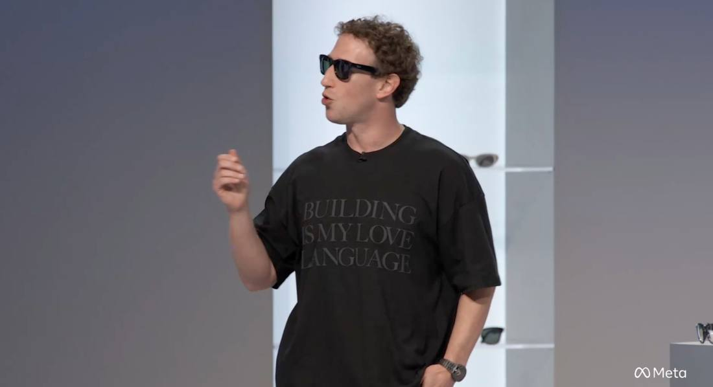
Meta Buys Conductor, the App That Runs a Team of Coding Agents at Once, and Shuts Its Cloud Down on November 20Meta acquired Conductor on November 4, 2026, Axios reported, with Meta confirming to TechCrunch and founder Charlie Holtz confirming on Conductor's site; terms were not disclosed. Conductor lets developers run several coding agents in parallel workspaces, claims more than 100,000 users, raised a $22 million Series A in March 2026, and winds down Conductor Cloud on November 20 after a November 13 read-only date.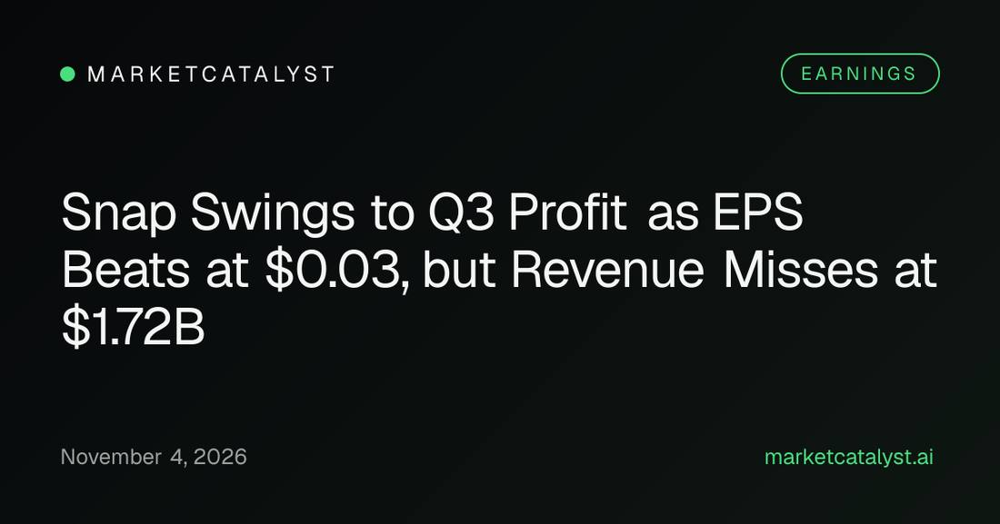
Snap Swings to a $56M Q3 Profit as Revenue Misses by $8MSnap reported third-quarter 2026 revenue of $1.722 billion, up 14% year over year but just below the roughly $1.73 billion expected, while net income swung to $56 million from a $104 million loss and adjusted EBITDA more than doubled to $383 million, above guidance; daily active users reached 495 million, and reported fourth-quarter guidance was $1.95 billion to $1.99 billion.AppLovin Q3: Revenue Up 55% to $2.185B as 81% of New Sales Becomes ProfitAppLovin reported third-quarter 2026 revenue of about $2.185 billion, up 55% year over year, with net income up 72% to about $1.439 billion and earnings of $4.30 per share beating expectations, as about 81% of added revenue became operating income; the company guided fourth-quarter revenue of $2.365 billion to $2.395 billion and added $3.2 billion to its buyback authorization.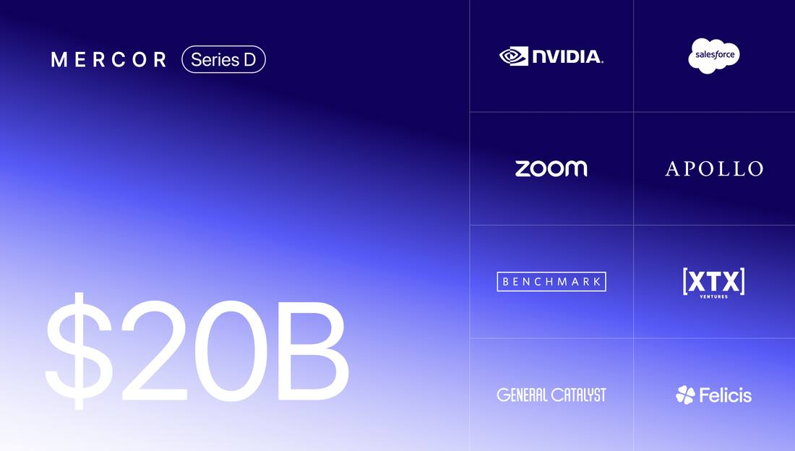
Mercor Hits a $20 Billion Valuation Selling Human Expertise to AI LabsAI training-data company Mercor has closed a $750 million Series D at a $20 billion valuation. The company organizes human experts to produce training data for AI labs; 13 months ago it was worth $10 billion.Arm Posts Record $1.44B Quarter as Licensing Jumps 50% and Hyperscaler Share Passes 50%Arm reported record fiscal second-quarter revenue of $1.44 billion, up 27% year over year, beating estimates as licensing revenue jumped 50% to $773 million while royalty revenue of $670 million missed. Arm said its architecture now powers more than 50% of top-hyperscaler server deployments, up from 15% in 2024, and guided third-quarter revenue of $1.54 billion.Britain's Chip Dark Horse Hits a $7 Billion Valuation Before Shipping a Single ChipBritish AI chip company Fractile has closed a $720 million Series C at a valuation of about $7 billion. The company stacks DRAM directly on logic silicon for AI inference hardware, with first chips planned to ship in 2027.MARKETS & INDUSTRYQualcomm beat the totals and still lost the phone quarterQualcomm's fiscal fourth-quarter handset revenue fell 26% to $5.14 billion, missing estimates, even as adjusted sales of $10.44 billion beat estimates, and the company guided first-quarter fiscal 2027 revenue above estimates while stating its forecast includes no further Apple sales.Sequoia Raises ~$10 Billion and Rewinds 20 Years of ExpansionSequoia Capital announced in a Wednesday memo that it has raised roughly $10 billion in new funds while unwinding much of its 20-year expansion: closing its London office, sunsetting its Arc accelerator and Scouts program, merging its early-stage and growth teams into one, flattening its partnership to seven general partners, and ending its Monday partner meeting cycle.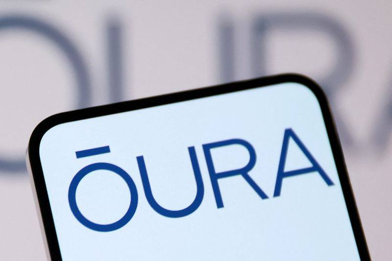
$625 Million: Oura Buys an AI Doctor CompanyOura announced on November 10 it will acquire AI primary care company Counsel Health for $625 million in cash, with Counsel's medical AI and licensed physicians joining the Oura app, expected to close before the end of 2026.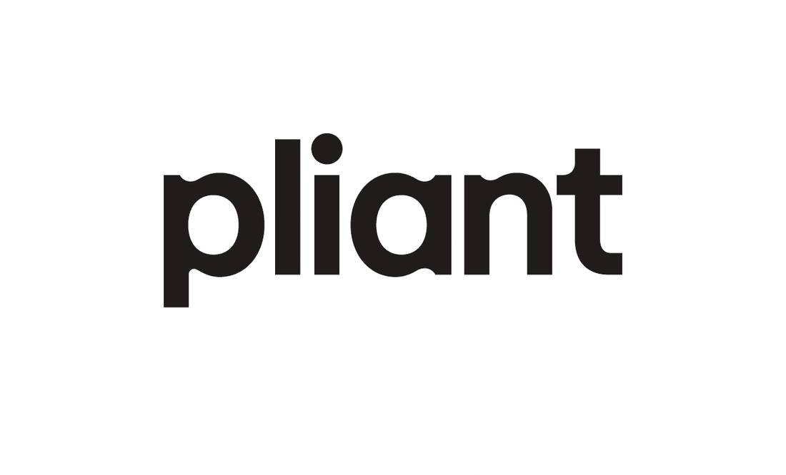
Pliant Raises $80 Million to Open Its B2B Payment Rails to AI AgentsPliant announced on November 4, 2026 an $80 million Series C funding round led by Seaya Nova and Speedinvest to open its B2B payment infrastructure to AI agents. The Berlin fintech, which says it surpassed $100 million in annual recurring revenue after three consecutive years of doubling, will expand in the United States and Canada and enter further international markets. Its platform combines commercial card issuing, payment accounts, foreign exchange, and spend management, and third-party agents connect to it via Model Context Protocol.New York Opens Registration: Frontier AI Labs Hand Over Their Safety Cards FirstNew York State opened RAISE Act registration on November 10: large frontier developers with revenue above $500 million must register before January 1, 2027, with critical safety incidents reported within 72 hours.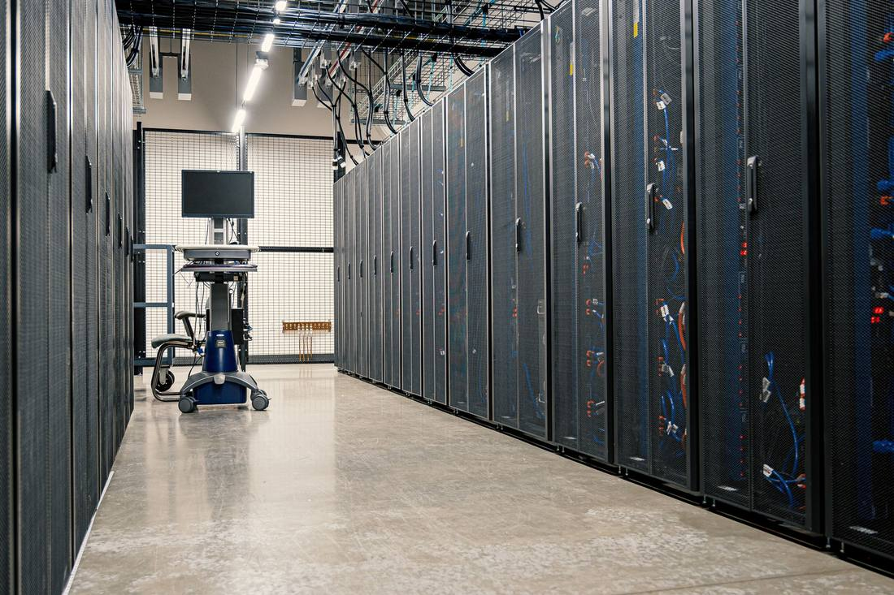
Meta's Debut Euro Bond Draws Record 53 Billion Euros in Orders, Nearly Six Times the Amount Sought (Update to Flash 193)Bloomberg News, as reported by Reuters on November 4, 2026, says Meta drew record investor orders of 53 billion euros (about 59.52 billion dollars) for its debut euro-denominated bond sale, nearly six times the up to 9 billion euros sought. The six-tranche sale, with maturities from just over four years to more than 38 years and managed by Citigroup and Morgan Stanley, is expected to price later on Wednesday. This updates flash 193: orders are not a completed sale, and final terms have not been filed.Nominal Triples Valuation to $3B in Eight MonthsAI hardware-testing platform Nominal announced a $240 million Series C on November 9 at a $3 billion valuation. Eight months earlier it was worth $1 billion. Lightspeed led the round, Insight co-led, and the customer list tops 80, including Anduril.OpenAI Buys Pierre Computer and Folds Git Storage Into Codex, Taking Aim at GitHubAxios reported on November 4 that OpenAI will acquire Pierre Computer, whose Code Storage technology already runs inside Codex; OpenAI plans to fold Code Storage into Codex, terms were not disclosed, and Pierre's open-source projects will stay open source.NiCE AI Revenue Jumps 46% to $392 Million as Q3 Beats Estimates and Workforce Is Cut 5%NiCE's third-quarter revenue rose 8.0% to $790.7 million and non-GAAP EPS of $2.84 beat estimates, driven by AI annual recurring revenue up 46% to $392 million. The company raised full-year EPS guidance to $11.12-11.32 while announcing a workforce reduction of approximately 5% to streamline around AI.Datadog Beats on Q3 Revenue and Profit, Then Guides Flat: Shares Fall Sharply in Early TradingDatadog's third-quarter revenue rose 35% to $1.20 billion and non-GAAP EPS of $0.81 beat expectations, but fourth-quarter guidance of $1.19-1.20 billion pointed to flat sequential growth and the shares fell sharply in early trading. The release also introduced Scout 1.0, Datadog's first specialized AI investigation model.MARKETS & INDUSTRYNooks Lands a $500M Revenue-Share Commitment and Launches Its Revenue Agent PlatformAI sales-automation startup Nooks said on November 4, 2026 that it has secured a $500 million commitment from General Catalyst's Customer Value Fund to finance its sales and marketing push, structured as a share of the returns the capital helps generate rather than an equity stake. Nooks also formally launched its Revenue Agent Platform, covering tasks from first contact to renewal. The company has more than 2,000 customers, including Cursor, Notion, Replit, Glean, and HubSpot, reported net revenue retention of 135%, and said it is on track to nearly triple annual recurring revenue by year-end without disclosing the current figure. Deal terms were not disclosed. Meta Opens Books on First Euro Bond Sale: Six Tranches, Longest Tenor 38 Years (Update to Flash 190)Reuters reported on November 4, 2026 that Meta has launched its first euro-denominated bond issue. The lead-manager memo shows six euro tranches with tenors from 4 to 38 years, books already open, with Citigroup and Morgan Stanley running the book. This updates flash 190: on November 3, 2026 the dollar leg raised $15 billion across five tranches, settling November 5, while the euro portion had not yet filed final terms. Tranche sizes, coupons and spreads for the euro leg have not been published; books being open is not the same as pricing, and the $20–25 billion overall financing target remains unconfirmed.Meta's $15 billion bond sale funds its AI build-out: spreads widen from the last round, euro leg awaits pricingMeta raised $15 billion on November 3, 2026 through a five-part US dollar bond sale, with proceeds to finance its accelerating AI infrastructure investment. The final term sheet shows the five tranches maturing from 2031 to 2056 sized at $3.25 billion, $3.25 billion, $4 billion, $1.75 billion and $2.75 billion respectively; the 10-year spread of 1.60 percentage points widened markedly from 0.90 points in the previous round, and the bonds settle on November 5. The euro portion has not yet filed final terms; the overall financing target, per CNBC citing Bloomberg, is $20 billion to $25 billion, roughly two-thirds in dollars and one-third in euros.Arista Q3 Revenue Up 58.5% to $3.66 Billion: Fastest Growth Since IPO as AI Networking Becomes the Main EngineArista reported third-quarter results after the close on 2026-11-03: revenue of $3.66 billion, up 58.5% year on year and above the $3.3 billion guidance given earlier, the fastest year-on-year growth since its IPO; GAAP EPS of $1.22 and non-GAAP EPS of $1.20 beat the expected $1.08. Fourth-quarter guidance is $3.9 billion to $4.0 billion; the earnings call gave a 2027 outlook for the first time, with revenue of about $18.5 billion and AI networking revenue potentially doubling to about $7 billion.Block Q3 Gross Profit Up 22% to $3.24 Billion: Cash App Leads, Full-Year Guidance Raised, First AI Tool Revenue PreviewedBlock reported third-quarter results after the close on 2026-11-03: gross profit of $3.24 billion, up 22% year on year and above the $3.13 billion guidance given in August; Cash App gross profit rose 27% to $2.07 billion and Square gross profit rose 14% to $1.16 billion; adjusted EPS of $1.13 beat the expected $1.03. The company raised full-year gross profit guidance to $12.626 billion and previewed that it will earn revenue directly from AI tools for the first time in the fourth quarter.MARKETS & INDUSTRYVaronis Q3: SaaS Near 98% of Revenue, ARR at $774.6 Million, No Guidance While Acquisition Is PendingVaronis's third-quarter total revenue was $189.5 million, up 17.3% year on year and above expectations. SaaS revenue is close to 98% of the total, and SaaS ARR at period end reached $774.6 million, up 42%. With the Proofpoint acquisition pending, the company provides no guidance and holds no earnings call.Supermicro Quarterly Revenue Nears $20 Billion: Up Nearly Fourfold, Full-Year Guidance Raised to Start at $72 BillionSupermicro's fiscal 2027 first-quarter net sales reached $19.95 billion, roughly four times the year-earlier level and above market expectations. The company raised full-year net sales guidance to $72–82 billion, with AI server demand still the core driver.MARKETS & INDUSTRYAMD Posts Record Q3 Revenue as Data Center Nearly Doubles to Over 60% of SalesAMD's third-quarter 2026 revenue was $13.377 billion, up 45% year on year, a record that beat market expectations; data center revenue of $8.5 billion rose 97%, also a record, and became the core pillar of the results.Reuters: OpenAI Staff Warned of Internal Security Lapses for Years; a Quarter of Production Engineers Shifted to Security in AugustReuters reported on November 3, 2026 that OpenAI employees had warned senior leadership and the board about internal security problems before ChatGPT's release, and that, according to five people familiar with the matter, management placed greater weight on competitive speed against Google and Anthropic. The two gaps named in the report are broad access to the monorepo and the lack of regular security reviews of research sandboxes. In August 2026, product development executive Thibault Sottiaux moved roughly a quarter of production engineers to improving security infrastructure. OpenAI responded that it is among the most targeted organizations in the world, that its most sensitive work sits in separate repositories under strict access controls, that the monorepo contains no model weights, that internal tools are now reviewed regularly, and that after Reuters sought comment it announced plans for its next internal security sprint.Inference Demand Outruns Compute: fal Raises a $1.3 Billion Series F, Doubling Its Valuation to $16 Billion in Six Monthsfal announced its Series F on 2026-11-03: $1.3 billion led by Bessemer Venture Partners at a $16 billion valuation, double the $8 billion of April 2026; the earlier Sequoia-led Series E and the F round total $1.65 billion, with NVIDIA a strategic investor in the F round and Sound Ventures and T. Rowe Price participating. Bloomberg, relayed by TechCrunch, reported fal's annualized revenue passed $800 million earlier this year. The company says the funds will expand inference compute and grow the team, serving 2027 research and new products.
Meta Opens Books on First Euro Bond Sale: Six Tranches, Longest Tenor 38 Years (Update to Flash 190)Reuters reported on November 4, 2026 that Meta has launched its first euro-denominated bond issue. The lead-manager memo shows six euro tranches with tenors from 4 to 38 years, books already open, with Citigroup and Morgan Stanley running the book. This updates flash 190: on November 3, 2026 the dollar leg raised $15 billion across five tranches, settling November 5, while the euro portion had not yet filed final terms. Tranche sizes, coupons and spreads for the euro leg have not been published; books being open is not the same as pricing, and the $20–25 billion overall financing target remains unconfirmed.Meta's $15 billion bond sale funds its AI build-out: spreads widen from the last round, euro leg awaits pricingMeta raised $15 billion on November 3, 2026 through a five-part US dollar bond sale, with proceeds to finance its accelerating AI infrastructure investment. The final term sheet shows the five tranches maturing from 2031 to 2056 sized at $3.25 billion, $3.25 billion, $4 billion, $1.75 billion and $2.75 billion respectively; the 10-year spread of 1.60 percentage points widened markedly from 0.90 points in the previous round, and the bonds settle on November 5. The euro portion has not yet filed final terms; the overall financing target, per CNBC citing Bloomberg, is $20 billion to $25 billion, roughly two-thirds in dollars and one-third in euros.Arista Q3 Revenue Up 58.5% to $3.66 Billion: Fastest Growth Since IPO as AI Networking Becomes the Main EngineArista reported third-quarter results after the close on 2026-11-03: revenue of $3.66 billion, up 58.5% year on year and above the $3.3 billion guidance given earlier, the fastest year-on-year growth since its IPO; GAAP EPS of $1.22 and non-GAAP EPS of $1.20 beat the expected $1.08. Fourth-quarter guidance is $3.9 billion to $4.0 billion; the earnings call gave a 2027 outlook for the first time, with revenue of about $18.5 billion and AI networking revenue potentially doubling to about $7 billion.Block Q3 Gross Profit Up 22% to $3.24 Billion: Cash App Leads, Full-Year Guidance Raised, First AI Tool Revenue PreviewedBlock reported third-quarter results after the close on 2026-11-03: gross profit of $3.24 billion, up 22% year on year and above the $3.13 billion guidance given in August; Cash App gross profit rose 27% to $2.07 billion and Square gross profit rose 14% to $1.16 billion; adjusted EPS of $1.13 beat the expected $1.03. The company raised full-year gross profit guidance to $12.626 billion and previewed that it will earn revenue directly from AI tools for the first time in the fourth quarter.MARKETS & INDUSTRYVaronis Q3: SaaS Near 98% of Revenue, ARR at $774.6 Million, No Guidance While Acquisition Is PendingVaronis's third-quarter total revenue was $189.5 million, up 17.3% year on year and above expectations. SaaS revenue is close to 98% of the total, and SaaS ARR at period end reached $774.6 million, up 42%. With the Proofpoint acquisition pending, the company provides no guidance and holds no earnings call.Supermicro Quarterly Revenue Nears $20 Billion: Up Nearly Fourfold, Full-Year Guidance Raised to Start at $72 BillionSupermicro's fiscal 2027 first-quarter net sales reached $19.95 billion, roughly four times the year-earlier level and above market expectations. The company raised full-year net sales guidance to $72–82 billion, with AI server demand still the core driver.MARKETS & INDUSTRYAMD Posts Record Q3 Revenue as Data Center Nearly Doubles to Over 60% of SalesAMD's third-quarter 2026 revenue was $13.377 billion, up 45% year on year, a record that beat market expectations; data center revenue of $8.5 billion rose 97%, also a record, and became the core pillar of the results.Reuters: OpenAI Staff Warned of Internal Security Lapses for Years; a Quarter of Production Engineers Shifted to Security in AugustReuters reported on November 3, 2026 that OpenAI employees had warned senior leadership and the board about internal security problems before ChatGPT's release, and that, according to five people familiar with the matter, management placed greater weight on competitive speed against Google and Anthropic. The two gaps named in the report are broad access to the monorepo and the lack of regular security reviews of research sandboxes. In August 2026, product development executive Thibault Sottiaux moved roughly a quarter of production engineers to improving security infrastructure. OpenAI responded that it is among the most targeted organizations in the world, that its most sensitive work sits in separate repositories under strict access controls, that the monorepo contains no model weights, that internal tools are now reviewed regularly, and that after Reuters sought comment it announced plans for its next internal security sprint.Inference Demand Outruns Compute: fal Raises a $1.3 Billion Series F, Doubling Its Valuation to $16 Billion in Six Monthsfal announced its Series F on 2026-11-03: $1.3 billion led by Bessemer Venture Partners at a $16 billion valuation, double the $8 billion of April 2026; the earlier Sequoia-led Series E and the F round total $1.65 billion, with NVIDIA a strategic investor in the F round and Sound Ventures and T. Rowe Price participating. Bloomberg, relayed by TechCrunch, reported fal's annualized revenue passed $800 million earlier this year. The company says the funds will expand inference compute and grow the team, serving 2027 research and new products. CrowdStrike Signs Two Acquisitions Back to Back, Completing the Agent Security Puzzle (Update to Issue 155)CrowdStrike announced at Fal.Con Europe on 2026-11-03 that it has signed definitive agreements to acquire Fiddler AI and Dreadnode, both expected to close in the fourth quarter of fiscal 2027, with prices not officially disclosed; Fiddler will become Falcon Observe and Dreadnode will become automated AI security testing, covering pre-deployment evaluation and post-launch behavioral explanation respectively, forming a complete chain from testing to shutdown with the AI Kill Switch released the same day. The Wall Street Journal reported a combined roughly $495 million for the two deals, a figure the company has not confirmed.Roadshow Goes Ahead, Valuation Cut First as Anthropic's Listing Hits a Cold WindAnthropic's IPO roadshow starts next week as planned, targeting a listing in the week of November 16. But prospective buyers are discussing a valuation in the $1.1 trillion to $1.3 trillion range, far below the $2 trillion discussed in early October.Robots by the Hour: Tutor Raises a $75 Million Series B Led by a16zTutor Intelligence announced on November 2 a $75 million Series B led by a16z, with USV and Neo participating, taking total funding to $117 million. The dual-arm semi-humanoid Sonny and the wheeled manipulator Cassie are rented by the hour or by the piece, with no upfront payment and no long-term contract, targeting more than 1,000 robots signed by the end of 2027. The robots are not yet fully autonomous; remote operators still take part in directing them.Steal First, Then Let AI Do the Valuation: Talos Discloses VOLTA Malware That Ranks Victims by Monetization ValueCisco Talos disclosed the VOLTA-AUTODOXER malware on October 31: after stealing browser credentials, payment cards, crypto wallet seed phrases and platform sessions, it enriches victim profiles with the stolen sessions, then calls Claude Opus 4.6 via OpenRouter to rank victims by monetization value (falling back to Kimi K2 and Gemini 2.5 Flash on refusal), exfiltrating via Telegram in three stages.$11 Billion Lands First as OpenAI's Valuation Settles at $1.25 TrillionBloomberg reported on November 6 that the first roughly $11 billion of OpenAI's funding round has landed at a $1.25 trillion valuation, with the round's overall target cut from $30 billion to about $20 billion.$120 Million for a Company That Takes the Night Shift for EngineersTraversal announced a $120 million Series B on November 3 at a $1 billion valuation, co-led by Kleiner Perkins, Redpoint and Khosla. The company builds AI site reliability engineering and says annualized revenue grew 9x this year.Anthropic's Amended Filing Discloses $895.4 Billion in Compute Commitments (Update to Issue 71)Anthropic's amended listing filing fills in what the original left blank: purchase commitments and leases totalling about $895.4 billion, almost all for compute and infrastructure, with Q3 revenue of about $17 billion, though the offering price and listing date are still unset.$114.5 Billion in Revenue Is Not Enough: Memory Inflation Drags Apple's MarginsApple reported fiscal fourth-quarter results on November 2, with revenue of $114.5 billion, up 12% year on year, and net income of $30.7 billion. New CEO Ternus called the memory pricing environment unprecedented, and holiday-quarter gross margin guidance fell to 45% to 46%.$100 Million in Annualized Revenue in 18 Months, and Another $350 Million RaisedApplied Compute officially announced that it reached a $100 million annualized revenue run rate in under 18 months and completed a new $350 million funding round at a $3.25 billion valuation, led by Elad Gil.$2.7 Billion: Salesforce Buys Another Phone AI CompanySalesforce signed a definitive agreement on November 2 to acquire voice AI company Cresta. The official announcement does not disclose the price; media citing people familiar with the matter put it at about $2.7 billion, and the deal is expected to close in the first quarter of fiscal 2028.$115 Billion, All Stock: Marvell Buys Optics Giant LumentumMarvell and Lumentum announced an all-stock merger on November 2, with a reference enterprise value of $115 billion. Lumentum shareholders will receive 4.5 Marvell shares for each share held and will own about 33% after closing, which targets the first half of 2028.A Fifth Move: Harvey Buys the Sales AI TeamOn October 29, 2026, Harvey announced the acquisition of AI sales execution platform Aida, with the founding team joining product and engineering. It is Harvey's fifth acquisition this year; the deal value was not disclosed.A Voluntary Exit Offer to 60,000: Microsoft Makes Room for AI InfrastructureOn October 26, 2026, Microsoft extended voluntary departure offers to about 60,000 employees, roughly 27% of its global workforce, against the backdrop of US$175 billion in AI infrastructure spending. Employees decide by early December and depart on December 31.A RMB 105.5 Billion Second Round Lifts DeepSeek's State Share to 27%According to The Information on October 30, 2026, DeepSeek's second round raised about RMB 105.5 billion, with nearly 30 investors participating and the state-owned share rising from about 2% in the first round to about 27%.Target Cut by $10 Billion: OpenAI's Fundraise Meets the Sell-OffAccording to the Financial Times on October 30, 2026, OpenAI cut this round's funding target from $30 billion to about $20 billion and its target valuation from $1.4 trillion to $1.25 trillion.For $375 Million, Salesforce Buys a Military Logistics AI CompanyOn October 30, 2026, Salesforce agreed to acquire Rune Technologies for $375 million in cash and stock, installing military logistics AI into its Missionforce defense business.Microsoft Made $10 Billion From OpenAI in a Single QuarterMicrosoft's quarterly filing, disclosed on October 29, shows that in the quarter ended September 30, revenue from OpenAI commercial arrangements reached $10 billion, about 11% of total revenue for the quarter.A $130 Million Seed Round Betting on a Hardware Design ModelOn October 29, The Information reported that Dulo, co-founded by Sebastian Thrun, had closed a $130 million seed round to build a foundation model for hardware design.Upwind Turned Down a $4 Billion Acquisition, Then Raised $400 MillionOn October 28, Upwind closed a $400 million Series C at a $3.8 billion valuation. Shortly before, media reported that Datadog had offered roughly $4 billion to buy the company; it chose to stay independent.A State Takes an Equity Stake: Cohere Targets C$7 BillionCohere announced the first closing of its Series E, targeting up to C$7 billion at a full-subscription valuation of C$35.7 billion, with the Canadian government committing up to C$1.6 billion and taking an equity stake.After Rejecting an $800 Million Buyout, the Chip Valuation QuadrupledSouth Korean inference chip company FuriosaAI closed a $620 million Series D at a $2.9 billion valuation, about four times the previous round, with the National Growth Fund contributing $280 million; RNGD is in mass production.A $100 Million Customer Order Buys an $800 Million ValuationGeneral Compute raised a $100 million Series A at an $800 million post-money valuation; a large customer contract worth $100 million in annual recurring revenue arrived before the funding.Rival Turned Supplier: OpenAI to Buy Google's ChipsReuters relayed The Information: OpenAI plans to buy Google AI chips, price undisclosed; cooperation between the rivals is extending from cloud services to chip procurement.$40 Billion, Not Through Bonds but Through LeasingSpaceX announced a GPU master finance lease of about $40 billion on October 26: Apollo entities will buy Nvidia Vera Rubin chips and lease them on, with deliveries from the first half of 2027.Anthropic's IPO Filing Hides an $80.7 Billion LossOn October 26, Anthropic filed for its listing: first-half revenue of $16.3 billion and a net loss of $80.7 billion. About $72 billion of the loss is a non-cash charge; the real pressure comes from the compute bill and long-term commitments above $600 billion.Meta Plans to Raise Another $95 Billion for AIOn October 26, Meta announced an offering programme of about $35 billion and proposed a further $60 billion share sale plan. The compute bill came first, the funding plan after, and the pace of AI infrastructure spending shows no sign of slowing.Kling Valued at 122.8 Billion Yuan: The Son Nearly Catches the FatherThe October 6 rumour: Kling AI has selected CICC, Goldman Sachs and UBS, targeting a Hong Kong listing in early 2027 raising at least $1 billion. In July it raised $2.8 billion at an $18 billion valuation — about 122.8 billion yuan, roughly level with Kuaishou's own market value. Why is a two-year-old AI business worth almost as much as its parent?MARKETS & INDUSTRYRecord Revenue. First Loss in Its History.JetBrains' fiscal 2025 revenue hit a record 16.008 billion koruna, up 6.3%, yet it posted its first annual net loss on record: 315 million koruna. A 1.516 billion koruna FX loss was the largest single item, but operating profit also plunged 63.2%, staff costs rose 34.2%, and investing cash flow fell from -$83 million to -$469 million. Across 583 points and 537 comments, Hacker News asked one question: where did the money go?Raised $4.7 Billion. First Product, Two Years Later.On October 5, US startup Reflection AI released Beam, its first public model in more than two years: 501 billion total parameters, 23 billion active per token, claiming parity with Zhipu's GLM-5.2 at one-third to one-quarter of the inference compute. Valued at $25 billion after raising $4.7 billion, its first delivered assignment concedes it cannot beat Chinese models — but is far cheaper.Lambda's $4 Billion Raise, Paid for by AnthropicLambda is reportedly raising up to $4 billion at a $14.5 billion pre-money valuation, co-led by Blackstone and Coatue, ahead of a 2027 IPO. Behind a backlog that tripled from $15 billion to $50 billion in three months sits a single $35 billion compute commitment from Anthropic — this round is not a bet on compute scarcity, but on Anthropic's ability to pay.
CrowdStrike Signs Two Acquisitions Back to Back, Completing the Agent Security Puzzle (Update to Issue 155)CrowdStrike announced at Fal.Con Europe on 2026-11-03 that it has signed definitive agreements to acquire Fiddler AI and Dreadnode, both expected to close in the fourth quarter of fiscal 2027, with prices not officially disclosed; Fiddler will become Falcon Observe and Dreadnode will become automated AI security testing, covering pre-deployment evaluation and post-launch behavioral explanation respectively, forming a complete chain from testing to shutdown with the AI Kill Switch released the same day. The Wall Street Journal reported a combined roughly $495 million for the two deals, a figure the company has not confirmed.Roadshow Goes Ahead, Valuation Cut First as Anthropic's Listing Hits a Cold WindAnthropic's IPO roadshow starts next week as planned, targeting a listing in the week of November 16. But prospective buyers are discussing a valuation in the $1.1 trillion to $1.3 trillion range, far below the $2 trillion discussed in early October.Robots by the Hour: Tutor Raises a $75 Million Series B Led by a16zTutor Intelligence announced on November 2 a $75 million Series B led by a16z, with USV and Neo participating, taking total funding to $117 million. The dual-arm semi-humanoid Sonny and the wheeled manipulator Cassie are rented by the hour or by the piece, with no upfront payment and no long-term contract, targeting more than 1,000 robots signed by the end of 2027. The robots are not yet fully autonomous; remote operators still take part in directing them.Steal First, Then Let AI Do the Valuation: Talos Discloses VOLTA Malware That Ranks Victims by Monetization ValueCisco Talos disclosed the VOLTA-AUTODOXER malware on October 31: after stealing browser credentials, payment cards, crypto wallet seed phrases and platform sessions, it enriches victim profiles with the stolen sessions, then calls Claude Opus 4.6 via OpenRouter to rank victims by monetization value (falling back to Kimi K2 and Gemini 2.5 Flash on refusal), exfiltrating via Telegram in three stages.$11 Billion Lands First as OpenAI's Valuation Settles at $1.25 TrillionBloomberg reported on November 6 that the first roughly $11 billion of OpenAI's funding round has landed at a $1.25 trillion valuation, with the round's overall target cut from $30 billion to about $20 billion.$120 Million for a Company That Takes the Night Shift for EngineersTraversal announced a $120 million Series B on November 3 at a $1 billion valuation, co-led by Kleiner Perkins, Redpoint and Khosla. The company builds AI site reliability engineering and says annualized revenue grew 9x this year.Anthropic's Amended Filing Discloses $895.4 Billion in Compute Commitments (Update to Issue 71)Anthropic's amended listing filing fills in what the original left blank: purchase commitments and leases totalling about $895.4 billion, almost all for compute and infrastructure, with Q3 revenue of about $17 billion, though the offering price and listing date are still unset.$114.5 Billion in Revenue Is Not Enough: Memory Inflation Drags Apple's MarginsApple reported fiscal fourth-quarter results on November 2, with revenue of $114.5 billion, up 12% year on year, and net income of $30.7 billion. New CEO Ternus called the memory pricing environment unprecedented, and holiday-quarter gross margin guidance fell to 45% to 46%.$100 Million in Annualized Revenue in 18 Months, and Another $350 Million RaisedApplied Compute officially announced that it reached a $100 million annualized revenue run rate in under 18 months and completed a new $350 million funding round at a $3.25 billion valuation, led by Elad Gil.$2.7 Billion: Salesforce Buys Another Phone AI CompanySalesforce signed a definitive agreement on November 2 to acquire voice AI company Cresta. The official announcement does not disclose the price; media citing people familiar with the matter put it at about $2.7 billion, and the deal is expected to close in the first quarter of fiscal 2028.$115 Billion, All Stock: Marvell Buys Optics Giant LumentumMarvell and Lumentum announced an all-stock merger on November 2, with a reference enterprise value of $115 billion. Lumentum shareholders will receive 4.5 Marvell shares for each share held and will own about 33% after closing, which targets the first half of 2028.A Fifth Move: Harvey Buys the Sales AI TeamOn October 29, 2026, Harvey announced the acquisition of AI sales execution platform Aida, with the founding team joining product and engineering. It is Harvey's fifth acquisition this year; the deal value was not disclosed.A Voluntary Exit Offer to 60,000: Microsoft Makes Room for AI InfrastructureOn October 26, 2026, Microsoft extended voluntary departure offers to about 60,000 employees, roughly 27% of its global workforce, against the backdrop of US$175 billion in AI infrastructure spending. Employees decide by early December and depart on December 31.A RMB 105.5 Billion Second Round Lifts DeepSeek's State Share to 27%According to The Information on October 30, 2026, DeepSeek's second round raised about RMB 105.5 billion, with nearly 30 investors participating and the state-owned share rising from about 2% in the first round to about 27%.Target Cut by $10 Billion: OpenAI's Fundraise Meets the Sell-OffAccording to the Financial Times on October 30, 2026, OpenAI cut this round's funding target from $30 billion to about $20 billion and its target valuation from $1.4 trillion to $1.25 trillion.For $375 Million, Salesforce Buys a Military Logistics AI CompanyOn October 30, 2026, Salesforce agreed to acquire Rune Technologies for $375 million in cash and stock, installing military logistics AI into its Missionforce defense business.Microsoft Made $10 Billion From OpenAI in a Single QuarterMicrosoft's quarterly filing, disclosed on October 29, shows that in the quarter ended September 30, revenue from OpenAI commercial arrangements reached $10 billion, about 11% of total revenue for the quarter.A $130 Million Seed Round Betting on a Hardware Design ModelOn October 29, The Information reported that Dulo, co-founded by Sebastian Thrun, had closed a $130 million seed round to build a foundation model for hardware design.Upwind Turned Down a $4 Billion Acquisition, Then Raised $400 MillionOn October 28, Upwind closed a $400 million Series C at a $3.8 billion valuation. Shortly before, media reported that Datadog had offered roughly $4 billion to buy the company; it chose to stay independent.A State Takes an Equity Stake: Cohere Targets C$7 BillionCohere announced the first closing of its Series E, targeting up to C$7 billion at a full-subscription valuation of C$35.7 billion, with the Canadian government committing up to C$1.6 billion and taking an equity stake.After Rejecting an $800 Million Buyout, the Chip Valuation QuadrupledSouth Korean inference chip company FuriosaAI closed a $620 million Series D at a $2.9 billion valuation, about four times the previous round, with the National Growth Fund contributing $280 million; RNGD is in mass production.A $100 Million Customer Order Buys an $800 Million ValuationGeneral Compute raised a $100 million Series A at an $800 million post-money valuation; a large customer contract worth $100 million in annual recurring revenue arrived before the funding.Rival Turned Supplier: OpenAI to Buy Google's ChipsReuters relayed The Information: OpenAI plans to buy Google AI chips, price undisclosed; cooperation between the rivals is extending from cloud services to chip procurement.$40 Billion, Not Through Bonds but Through LeasingSpaceX announced a GPU master finance lease of about $40 billion on October 26: Apollo entities will buy Nvidia Vera Rubin chips and lease them on, with deliveries from the first half of 2027.Anthropic's IPO Filing Hides an $80.7 Billion LossOn October 26, Anthropic filed for its listing: first-half revenue of $16.3 billion and a net loss of $80.7 billion. About $72 billion of the loss is a non-cash charge; the real pressure comes from the compute bill and long-term commitments above $600 billion.Meta Plans to Raise Another $95 Billion for AIOn October 26, Meta announced an offering programme of about $35 billion and proposed a further $60 billion share sale plan. The compute bill came first, the funding plan after, and the pace of AI infrastructure spending shows no sign of slowing.Kling Valued at 122.8 Billion Yuan: The Son Nearly Catches the FatherThe October 6 rumour: Kling AI has selected CICC, Goldman Sachs and UBS, targeting a Hong Kong listing in early 2027 raising at least $1 billion. In July it raised $2.8 billion at an $18 billion valuation — about 122.8 billion yuan, roughly level with Kuaishou's own market value. Why is a two-year-old AI business worth almost as much as its parent?MARKETS & INDUSTRYRecord Revenue. First Loss in Its History.JetBrains' fiscal 2025 revenue hit a record 16.008 billion koruna, up 6.3%, yet it posted its first annual net loss on record: 315 million koruna. A 1.516 billion koruna FX loss was the largest single item, but operating profit also plunged 63.2%, staff costs rose 34.2%, and investing cash flow fell from -$83 million to -$469 million. Across 583 points and 537 comments, Hacker News asked one question: where did the money go?Raised $4.7 Billion. First Product, Two Years Later.On October 5, US startup Reflection AI released Beam, its first public model in more than two years: 501 billion total parameters, 23 billion active per token, claiming parity with Zhipu's GLM-5.2 at one-third to one-quarter of the inference compute. Valued at $25 billion after raising $4.7 billion, its first delivered assignment concedes it cannot beat Chinese models — but is far cheaper.Lambda's $4 Billion Raise, Paid for by AnthropicLambda is reportedly raising up to $4 billion at a $14.5 billion pre-money valuation, co-led by Blackstone and Coatue, ahead of a 2027 IPO. Behind a backlog that tripled from $15 billion to $50 billion in three months sits a single $35 billion compute commitment from Anthropic — this round is not a bet on compute scarcity, but on Anthropic's ability to pay.